오늘의 arXiv Top 15
2026-09-10 (목) ·
cs.CV / cs.LG / cs.RO / cs.CL / cs.AI New submissions 전수 평가
cross-list · replacement 제외, 중복 병합 · Top 15은 원문까지 읽고 정리
1차 스크리닝 316편 (Claude (scheduled agent)) → Top 15 PDF 정밀 리뷰 (Claude (scheduled agent))
Programmable World Model
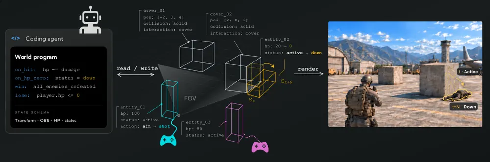
Show-Harness: Just a VLM Agent Can Play Robots
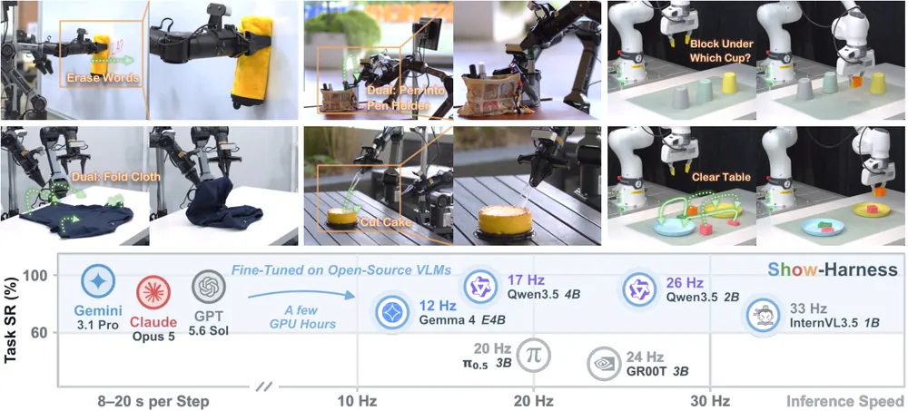
JEPA Policy: Diffusion-Free Imitation Learning via Paired Action and Future Representation Prediction
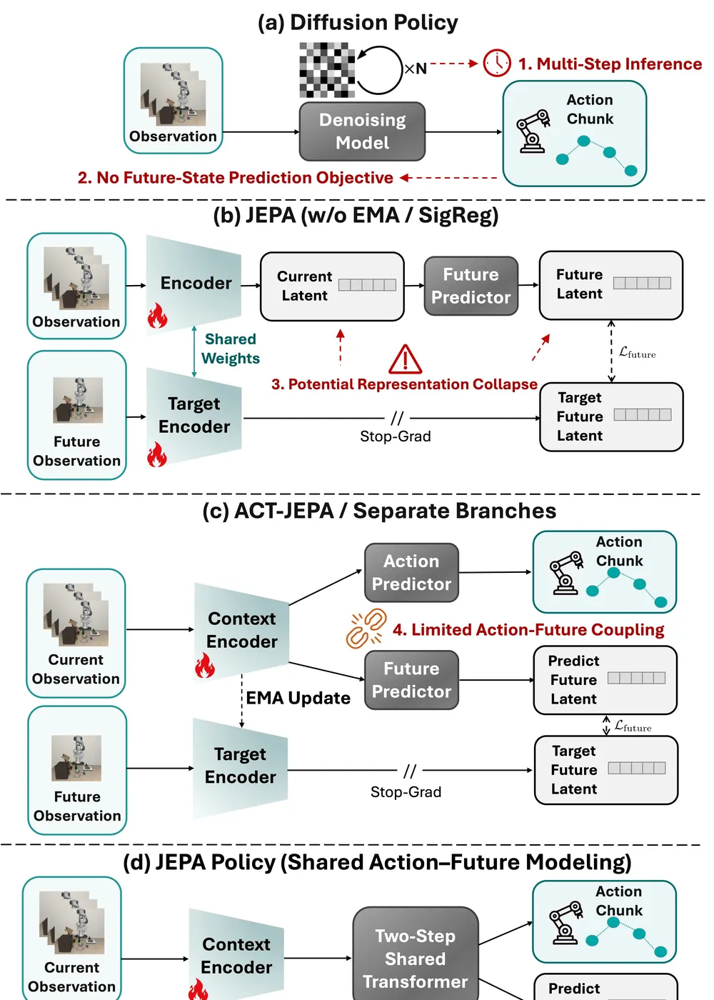
Time-Frequency Geometric Cross-Attention for Chunked Vision-Language-Action Models
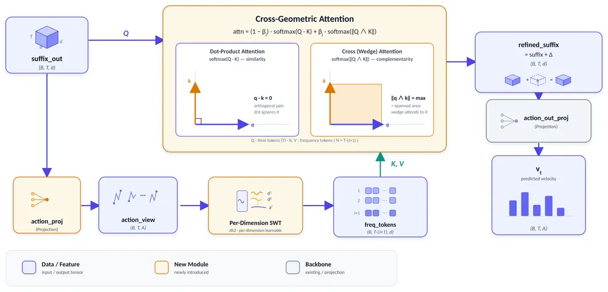
Semigroup-JEPA: Latent Dynamics Consistency for Zero-Shot Physics Generalization
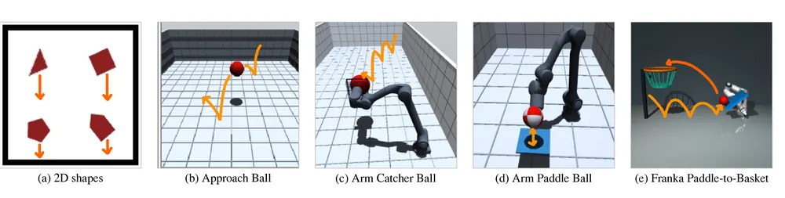
Grounding Generated Video Plans in Simulation Towards Versatile Dexterous Controllers
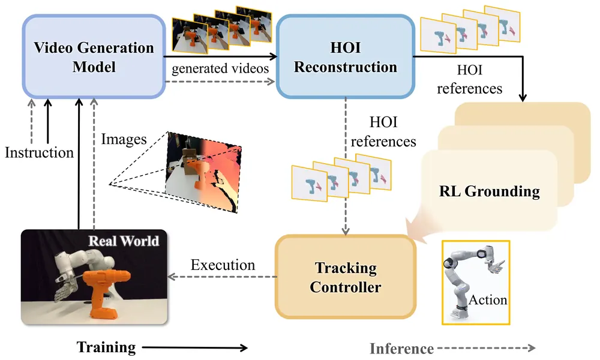
Assembling Two Parts in One Hand
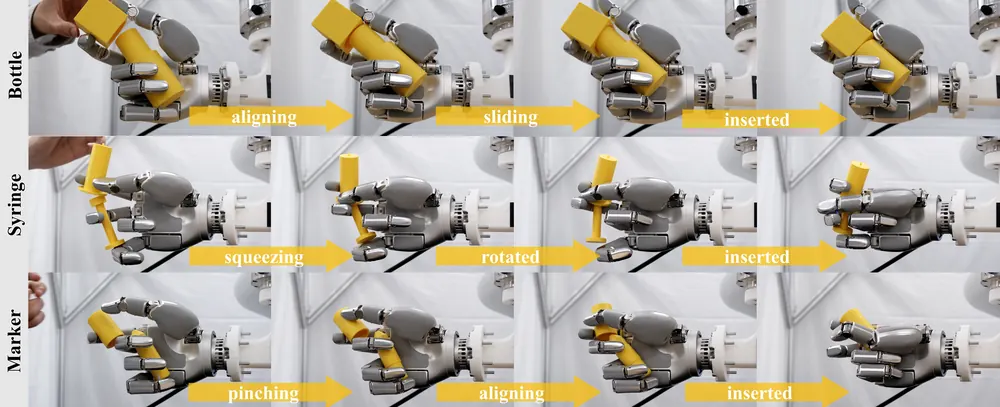
DUET-DINO: Simultaneous Cross-View World Modeling for Latent Planning in Robot Manipulation
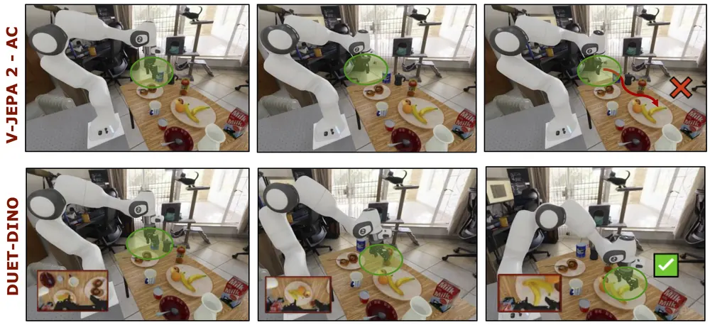
SwingBot: Learning Whole-Body Brachiation for Humanoid Robots
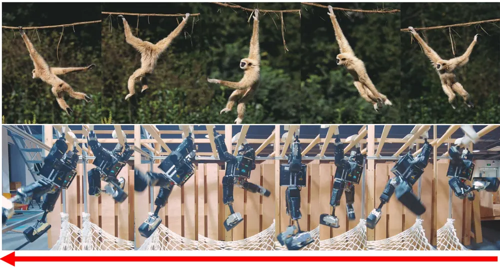
Frequency-Conditioned Flow Matching for Vision-Language-Action Models
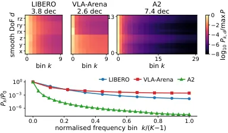
Identifying Habit, Physics, and Nuisance in Robot World Models
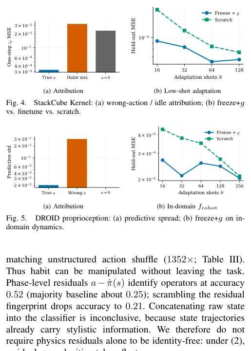
GTA-2: A Multi-VLM Framework for Synthesizing Robot Manipulation Skills via Grounded Task Axes
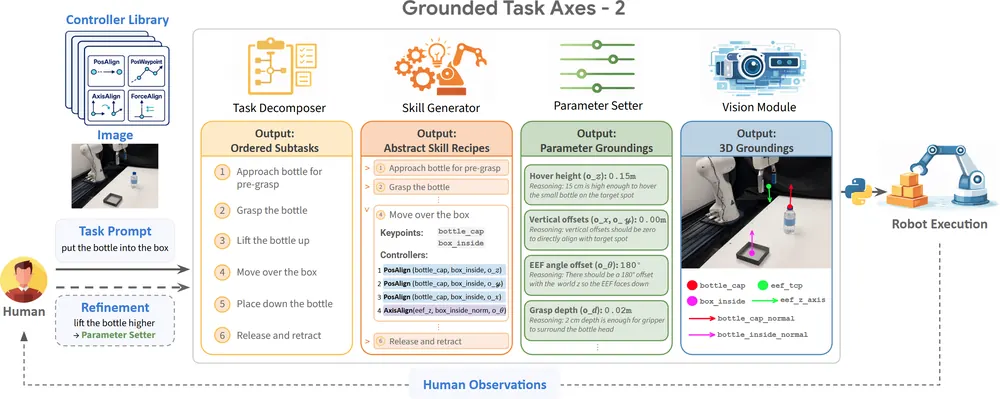
Learning Terrain-Adaptive Humanoid Locomotion on Granular Terrain
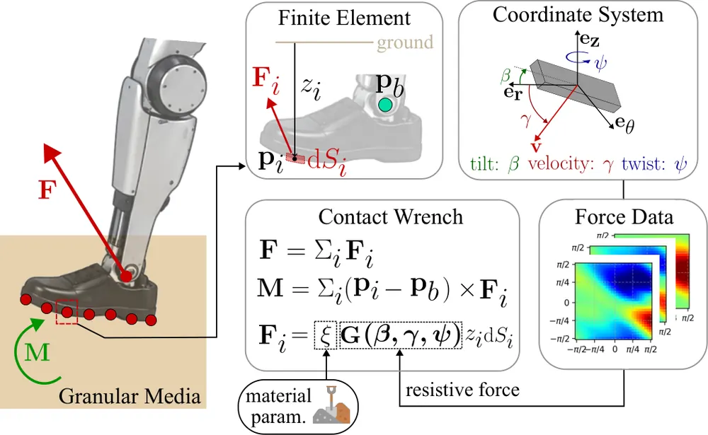
HaWMPO: Hallucination-Aware World Model-based Policy Optimization for Generalist Robot Policy
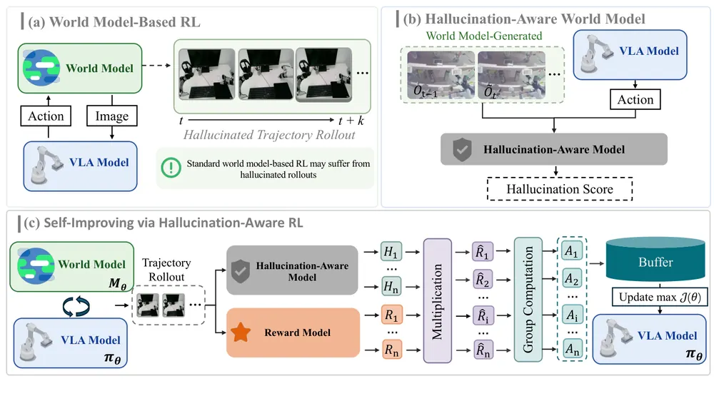
No Free Checker: A Survey of Verifiers for Robot Policies
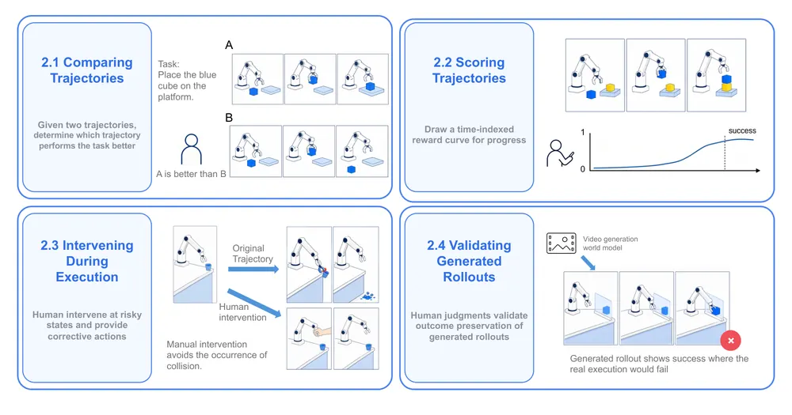
오늘의 핵심 연구 트렌드 종합
- world model 신뢰도 진단이 독립 연구 대상으로 부상 — HaWMPO, JEPA Policy, Semigroup-JEPA, Identifying Habit, Physics, and Nuisance 네 편 모두 world model을 그대로 쓰는 대신 그 rollout이나 latent dynamics가 실제로 무엇을 학습했는지 점수화·분리·검증하는 데 초점을 맞춤.
- action 표현을 주파수 영역에서 다루는 흐름 재부상 — TFGCA, FreqFM 둘 다 DCT·wavelet으로 action chunk를 시간-주파수로 분해해 Flow Matching VLA에 조건화함. FAST·FreqPolicy 등 선행 연구가 이미 있어 조합형 기여 성격이 강함.
- 매니퓰레이션 파이프라인의 모듈화·명시적 중간표현 — GTA-2(4-agent VLM 파이프라인), Show-Harness(이산 semantic action+interpreter), Programmable World Model(rule engine+video renderer) 세 편 모두 end-to-end 대신 단계를 명시적으로 분리해 검증·수정 가능하게 만듦.
- 휴머노이드 whole-body 제어에 물리 기반 모델과 latent 추정 결합 — SwingBot, granular terrain locomotion 두 편 모두 reference/keyframe guidance와 teacher-student latent 추정으로 배포 시 관측 불가능한 물리 상태(접촉·지반 강성)를 다룸.
- 생성 비디오·소량 시연을 시뮬레이션 학습 참조로 활용 — GALATEA(생성 비디오에서 HOI 궤적 복원), Assembling Two Parts in One Hand(사람 시연 한 장 리타겟팅) 두 편 모두 대규모 teleoperation 없이 참조 궤적을 만들어 RL을 학습시킴.
- 평가 방법론 자체가 연구 대상화 — No Free Checker survey가 verifier를 구하기 쉬운 정도(availability)와 그 판정을 믿을 수 있는 정도(credibility) 사이의 상충을 정리함. 위 world model 진단 트렌드와 문제의식이 맞물림.
유망 연구 방향 및 프로젝트 제안
world model rollout 신뢰도를 test-time recovery 트리거로 통합 - research question: HaWMPO의 hallucination score와 JEPA Policy의 future-consistency error를 하나의 runtime monitor로 결합해 실행 전/중 실패 예측 신호로 쓸 수 있는가. - 접근·novelty: 두 신호를 하나의 monitor로 합치고, task별 threshold를 수동 calibrate하는 대신 counterfactual reasoning(다른 action을 가정했을 때 신뢰도 변화)으로 자동 조정함. - 왜 지금·경쟁 prior works: 두 논문 모두 신뢰도 신호를 자기 pipeline 안에서만 검증했고 범용 failure detector로 확장하지 않음. No Free Checker가 지적한 availability-credibility trade-off를 정면 공략하는 지점이 비어 있음. - risk·target venue: 서로 다른 world model에 신뢰도 모델이 이식되는지가 관건이며, threshold calibration에 실패하면 신호가 무의미해짐. CoRL/RSS.
habit-physics-nuisance 분리를 매니퓰레이션 world model에 적용 - research question: teleoperation 데이터의 operator habit을 분리해 학습한 world model이 실제로 다른 operator·embodiment에 더 잘 전이하는가. - 접근·novelty: SCM+개입 실험을 DROID 같은 표준 매니퓰레이션 벤치마크로 확장하고, 물리 부분은 고정하고 인터페이스만 새 로봇에 맞춰 적응시키는 규칙(원 논문의 freeze-physics-adapt-interface)을 few-shot new-robot adaptation으로 검증함. - 왜 지금·경쟁 prior works: 원 논문은 StackCube 단일 task이고 실로봇 검증이 없음. 이 공백을 채우는 것이 기여점임. - risk·target venue: action은 habit과 physics의 합, 관측은 nuisance라는 causal 가정이 contact-rich task에서 깨질 위험이 있음. RSS/CoRL.
action frequency 분해 기반 test-time 재계획 트리거 - research question: action chunk의 고주파 correction 성분 급증이 실제 실패·contact anomaly를 예측하는 조기 신호로 쓰일 수 있는가. - 접근·novelty: TFGCA·FreqFM이 future work로만 남긴 아이디어(고주파 성분으로 재계획 주기 결정)를 실제 구현하고, TFGCA의 고주파 attention 신호 급증을 재시도 트리거로 사용함. - 왜 지금·경쟁 prior works: 두 논문 다 이 방향을 실험 없이 future work로 남겨 둠. FAST 계열도 online monitoring까지는 확장하지 않음. - risk·target venue: 주파수 신호가 task-specific이라 범용 threshold 설계가 어려움. ICRA/CoRL.
dual-view world model과 object-centric 3DGS 결합한 active perception - research question: DUET-DINO(side·wrist 카메라를 상호 조건화하는 dual-view latent world model)의 cross-view 조건화를 3DGS 표현과 결합하면 특정 순간에 필요한 view를 능동적으로 선택할 수 있는가. - 접근·novelty: cross-attention 가중치를 view informativeness 신호로 재활용해 next-best-view 선택에 사용함. - 왜 지금·경쟁 prior works: DUET-DINO는 고정된 두 view만 쓰고 view 선택 문제 자체는 다루지 않음. 3DGS·scene graph 결합은 검증되지 않음. - risk·target venue: 3DGS 렌더링 비용이 real-time planning에 부담됨. latency 검증이 관건임. CoRL/ICRA.
명시적 중간표현 파이프라인의 자동 실패 진단 orchestrator - research question: GTA-2·Show-Harness처럼 단계별 명시적 출력을 남기는 파이프라인에서 human feedback 대신 자동 orchestrator VLM이 실패 단계를 진단·재실행할 수 있는가. - 접근·novelty: 두 논문 모두 human feedback으로 stage를 재실행하는데, 이를 실행 모니터링 기반 자동 진단 loop로 대체함. - 왜 지금·경쟁 prior works: 두 논문 다 future work로만 언급했고 실제 구현 사례가 없음. - risk·target venue: 진단 정확도가 낮으면 무한 재시도 루프에 빠질 위험이 있음. CoRL.
오늘 반드시 읽어야 할 논문
- Programmable World Model — world state를 explicit rule engine으로 분리해 오차 누적을 구조적으로 피한 설계로, 오늘 최고점을 받음.
- Show-Harness: Just a VLM Agent Can Play Robots — 이산 semantic action+deterministic interpreter로 VLM이 직접 물리 결정을 내리게 한 구조가 VLA formulation 논의에 참고할 만함.
- JEPA Policy — future-consistency error를 학습 목적함수의 부산물로 얻어 failure detection에 바로 붙일 수 있는 실용적 진단 신호를 제공함.
- Time-Frequency Geometric Cross-Attention (TFGCA) — action chunk를 시간-주파수로 분해하는 관점이 failure detection·test-time optimization에 응용 가능함.
- Semigroup-JEPA — world model이 훈련 분포 밖 물리 조건으로 실제 일반화하는지 검증하는 실험 프로토콜 자체가 평가 설계에 참고할 가치가 있음.
- Grounding Generated Video Plans (GALATEA) — 생성 비디오를 시뮬레이션 grounding 참조로 쓰는 파이프라인, 실패 사례가 test-time recovery 데이터로 쓸 만함.
- DUET-DINO — dual-view cross-attention으로 rotation·gripper까지 포함한 fine-grained latent planning을 처음 다룸.
- Identifying Habit, Physics, and Nuisance in Robot World Models — teleoperation 데이터의 operator habit을 물리 법칙과 분리하는 causal formulation이 counterfactual reasoning 주제와 정확히 맞물림.
전체 1차 스크리닝 결과 (316편, 점수순) 펼치기
| # | 제목 | 점수 | 🤖 | 분야 | 한 줄 근거 |
|---|---|---|---|---|---|
| 1 | Time-Frequency Geometric Cross-Attention for Chunked Vision-Language-Action Models | 70 | 9 | VLA | action chunk를 wavelet으로 시간-주파수 분해하고 wedge product로 위상 간 near-orthogonal 관계를 포착하는 cross-attention 모듈임. LIBERO·LIBERO-Plus·RoboTwin과 실로봇 AgiBot A2에서 일관된 개선을 보여 증거가 강하고 기존 VLA에 drop-in 가능한 새 representation 설계임 |
| 2 | HaWMPO: Hallucination-Aware World Model-based Policy Optimization for Generalist Robot Policy | 68 | 10 | World Model/VLA | world model rollout의 hallucination을 점수화해 GRPO 보상에 반영하는 VLA post-training, LIBERO와 실로봇 G1 모두에서 개선을 확인함 |
| 3 | Identifying Habit, Physics, and Nuisance in Robot World Models | 68 | 9 | World Model | teleoperation 시연의 multimodality를 습관·물리·관측 nuisance로 분리하는 구조적 인과모델을 제안하고 action 개입 실험으로 검증함. world model의 next-obs predictor가 세 요인을 뒤섞는 문제를 새 formulation으로 짚었고 StackCube/DROID/RH20T에서 low-shot 전이 개선을 보임. |
| 4 | GTA-2: A Multi-VLM Framework for Synthesizing Robot Manipulation Skills via Grounded Task Axes | 64 | 9 | Manipulation/VLA | 4개 VLM이 task-axis를 분해·grounding해 zero-shot 매니퓰레이션 스킬을 만드는 프레임워크, 실로봇 14개 task에서 baseline 대비 31.4%p 앞섬 |
| 5 | Semigroup-JEPA: Latent Dynamics Consistency for Zero-Shot Physics Generalization | 62 | 7 | World Model | JEPA world model에 물리 파라미터를 action-conditioning으로 주입해 미지 중력장으로 제로샷 일반화시킴. DINO-WM 대비 open-loop 오차를 2배, 3D 로봇 태스크에서 diffusion policy 제어 성공률을 최대 2.5배 개선하고 이득의 원인이 인코더 표현 개선임을 분석적으로 보임. |
| 6 | DUET-DINO: Simultaneous Cross-View World Modeling for Latent Planning in Robot Manipulation | 60 | 10 | World Model/Manipulation | 정면·손목 카메라를 동시에 조건화하는 cross-view latent world model로 7-DoF 전체 액션 공간의 latent planning을 가능케 함, DINOv3가 V-JEPA2보다 action-conditioned 변화를 잘 포착함을 보임 |
| 7 | Programmable World Model | 60 | 6 | World Model | 자연어를 실행가능한 상태전이 프로그램으로 변환해 world state를 시각생성과 분리하는 새로운 formulation을 제시했고 world model의 지속성·제어가능성에 본질적으로 기여함 |
| 8 | Frequency-Conditioned Flow Matching for Vision-Language-Action Models | 58 | 10 | VLA | flow matching 기반 VLA의 액션 생성을 DCT 주파수 성분별로 조건화하는 방법, LIBERO-Plus에서 9.3점 개선과 실로봇 6개 task로 검증함 |
| 9 | JEPA Policy: Diffusion-Free Imitation Learning via Paired Action and Future Representation Prediction | 58 | 9 | VLA | diffusion 없이 action chunk와 미래 표현을 짝지어 예측하는 JEPA 기반 모방학습 정책을 제안함. 9개 시뮬레이션 태스크와 5태스크 630 episode 실기체 실험에서 Diffusion Policy를 능가하며 지연시간을 0.29ms만 추가해 low-latency VLA 대안으로 실용성이 큼. |
| 10 | Grounding Generated Video Plans in Simulation Towards Versatile Dexterous Controllers | 58 | 9 | Manipulation/Video | 생성한 HOI 비디오를 시뮬레이션 tracker로 grounding해 1500개 이상 참조 동작을 확보하는 파이프라인, 실로봇 폐루프 실험까지 검증함 |
| 11 | Learning Terrain-Adaptive Humanoid Locomotion on Granular Terrain | 57 | 8 | Locomotion | 3D resistive force theory 기반 물리적 granular contact 모델로 RL을 학습해 실제 자갈·모래 지형에서 agile 휴머노이드 보행을 처음 시연함 |
| 12 | SwingBot: Learning Whole-Body Brachiation for Humanoid Robots | 56 | 8 | Locomotion | 휴머노이드에 수동 손목 훅으로 brachiation을 학습시킨 첫 사례, biomimetic keyframe으로 탐색을 유도해 하드웨어에서 연속 바 이동을 시연함 |
| 13 | Assembling Two Parts in One Hand | 55 | 9 | Dexterous Manipulation | 한 손 안에서 두 부품을 조립하는 in-hand assembly를 RL로 학습, CoRL 2026 게재 확정이며 3개 task에서 sim-to-real zero-shot을 확인함 |
| 14 | No Free Checker: A Survey of Verifiers for Robot Policies | 55 | 8 | Manipulation | 로봇 정책 검증기 약 150개를 availability와 credibility 두 축으로 체계화한 서베이임. failure detection·verifier 우선 주제와 직결되고 신규 실험은 없지만 검증 가능한 9개 메트릭을 제시해 실용적 참고가치가 큼. |
| 15 | Show-Harness: Just a VLM Agent Can Play Robots | 54 | 9 | VLA/Embodied AI | semantic action unit 인터페이스로 VLM이 직접 로봇을 제어하게 하는 프레임워크, closed-source VLM의 zero-shot 제어와 소형 VLM의 경량 파인튜닝을 모두 지원함을 보임 |
| 16 | ViBe: Visual Behavior Adaptation for Perceptive Humanoid Whole-Body Control | 54 | 8 | Embodied AI/Locomotion | 사전학습 visual encoder를 LoRA로 motion tracker에 이식해 perceptive humanoid 제어를 post-training함, 4개 task sim-to-real 검증했으나 파라미터 효율화 범주의 기여임 |
| 17 | What Symmetry Buys a Learned Motion Planner | 53 | 7 | Motion Planning | start-goal 좌표계 하나로 SE(3) 대칭의 대부분을 공짜로 얻는다는 것을 실험적으로 분리해 보임, 충돌회피율을 14.6%에서 51.1%로 크게 개선함 |
| 18 | View-Structured Conformal Prediction for 3D Gaussian Splatting | 52 | 5 | 3D Vision | 3D Gaussian Splatting 렌더링에 conformal prediction으로 view별 coverage 보장을 부여함. object-centric 3D representation의 불확실성 정량화로 active perception/NBV에 실용적이고, 13개 실 scene과 Mip-NeRF360에서 폭을 20% 이상 줄이며 216-280 FPS를 유지함. |
| 19 | OmniPoint: Universal Monocular Metric Pointcloud from Any Camera | 52 | 4 | 3D Vision | 카메라 모델 무관 metric point cloud 통합 프레임워크로 decoupled ray-distance representation을 제안했고 robot perception에 활용 가능함 |
| 20 | World-Time Compute with Verified Code World Models | 52 | 4 | World Model | 코드로 검증가능한 world model을 대량 생성해 학습시키는 새로운 training-time compute 패러다임이고 world model 일반화에 통찰을 주나 symbolic state로 범위가 제한됨 |
| 21 | FolDeX: A Physical-World Benchmark for Long-Horizon Robotic Manipulation of Deformable Objects | 50 | 9 | Manipulation/Benchmark | 옷 접기 중심 장기 horizon deformable manipulation 실로봇 벤치마크로 2000시간 이상 데이터를 공개, 벤치마크 기여라 방법론적 신규성은 제한적임 |
| 22 | Through the Looking Glass: Directly Reading and Writing Transformers | 50 | 0 | NLP/Interpretability | signed contribution 기준으로 예측을 지탱하는 부분집합이 모델 크기와 무관하게 수십 개 수준임을 12개 모델에서 보이고, 학습 없이 개념을 유닛에 설치하는 편집까지 시연한 견고한 해석가능성 연구임 |
| 23 | RoMa-$Ω$: What Feed-Forward 3D Models Know About Image Matching | 49 | 3 | 3D Vision | feed-forward 3D 모델의 매칭 능력을 분석해 강한 matcher로 재훈련했고 visual localization에 유용하나 robotics 직접 검증은 없음 |
| 24 | Compact Visuotactile World Models for Lifting: Prediction, Reward Alignment, and Force Constraints | 48 | 8 | World Model | touch를 더한 compact visuotactile world model로 접촉력 예측과 force-constrained lifting 제어를 분석함. tactile perception과 world model 우선 주제에 부합하고 force budget 내 성공률에서 force feedback 이득을 정량화했으나 MuJoCo 시뮬레이션에 한정됨. |
| 25 | Actuator Dynamics Curricula for Narrow-Viability Tasks in Legged Robot Learning | 48 | 7 | RL | 관절 강성을 점진적으로 조여 viability kernel을 넓히는 actuator dynamics 커리큘럼을 제안하고 Spot의 handstand 전이를 실기체로 검증함. CoRL 2026 accept, 탐색 실패가 termination에서 오는 narrow-viability task에 새 축을 제시함. |
| 26 | RoboDrop: Curating VLA Post-Training Data via Local Gradient Compatibility | 47 | 7 | VLA/Data Curation | gradient compatibility로 VLA post-training 데이터를 자동 정제하는 방법, 실로봇 성공률을 35%에서 67.5%로 크게 올렸지만 데이터 큐레이션 범주의 기여임 |
| 27 | MotionBlind: Probing the Illusion of Motion Understanding in Video-LLMs | 46 | 5 | Video | video-LLM이 속도·방향 같은 운동정보를 읽지 못함을 보인 벤치마크이고 world model의 perceptual frontend 신뢰성에 직접적 시사점을 줌 |
| 28 | Deformable Object Manipulation under Partial Observability via Real-Time Full-Shape Estimation | 45 | 7 | Manipulation | corner 관측만으로 변형체 전체 형상을 실시간 추정하는 경량 cRVAE를 MPC에 결합, Go2 로봇에서 XPBD보다 수백 배 빠른 추론으로 검증함 |
| 29 | Learning Global Camera Poses from Noisy View-Graphs for Structure from Motion | 44 | 3 | 3D Vision | GNN 기반 view-graph 집계로 global SfM pose를 학습했고 robot navigation·mapping에 활용 가능한 3D reconstruction 기여임 |
| 30 | Belief-State Engine: Augmenting LLMs for Principled Planning Under Partial Observability | 42 | 4 | Embodied AI | LLM agent에 POMDP belief state를 명시적으로 유지시키는 아키텍처임. Bellman optimality를 증명하는 이론적 기여가 있으나 Tiger POMDP·공격그래프 도메인이고 실로봇 검증은 없음 |
| 31 | VLX-VR: An Agentic-Aware Video Reasoning Model | 42 | 3 | Video/Multimodal | Think-Memory-Observation 루프로 비디오 증거를 능동적으로 조회하는 agentic video reasoning 모델, MINERVA에서 78.79%로 SOTA를 냈으나 로봇 도메인은 아님 |
| 32 | Data-Driven Risk Fields for Safer End-to-End Autonomous Driving | 40 | 5 | Autonomous Driving | 규칙 기반 안전 prior를 pairwise risk label로 바꿔 end-to-end 주행 계획에 상대적 위험 순서를 학습시킴, Bench2Drive에서 개선을 보였으나 자율주행 도메인 특화임 |
| 33 | Guiding Image-to-3D Generation with Test-Time Partial Observations | 40 | 3 | 3D Vision | test-time에 부분 관측을 ray-consistent likelihood로 주입해 image-to-3D 기하 충실도를 개선했고 test-time optimization 주제와 직접 연관됨 |
| 34 | Direct Diversity Optimization for Diverse Successful Trajectories in Preference Post-Training | 40 | 3 | RL/Agents | 동일 결정 상태에서 분기한 성공 궤적들을 보존하도록 offline post-training하는 방법, BabyAI·WebShop 등 텍스트 에이전트에서 검증했고 로봇 스킬 다양성 확보에 참고할 만함 |
| 35 | Settling: Equilibrium Inference for Non-Convex Validity Sets | 40 | 2 | LG | 다봉 분포에서 conditional mean collapse를 막는 equilibrium 기반 추론 연산자를 제안함. VLA의 multimodal action 예측에도 시사점 있으나 검증이 toy geometric 세팅에 머무름. |
| 36 | PccDiffuser: Multi-solution Motion Planning for Continuum Robots | 38 | 6 | Manipulation | 연속체 로봇을 위한 diffusion 기반 multi-solution 모션 플래너로 미분가능 운동학을 denoising에 결합함. 실기체 3분절 텐던 로봇 실험을 포함하나 기존 diffusion planning을 continuum robot에 적용한 수준임. |
| 37 | Geometry Without Coordinates: LiDAR Diffusion as a 3D Feature Bridge | 38 | 3 | 3D Vision | 2D foundation model 지식을 LiDAR 조건부 diffusion으로 3D에 전이해 구조화된 표현을 학습했고 robot perception에 유용한 3D representation 분석임 |
| 38 | MLLMs Hallucinate when Information Distribution Drifts in Synergy Heads | 38 | 1 | Multimodal | MLLM hallucination을 head-level 정보드리프트로 설명하는 해석가능성 기여이나 robotics와 무관함 |
| 39 | Contrastive Projection: Reading Transformer Internals by Differencing Logit Lenses | 38 | 0 | NLP/Interpretability | 매칭된 프롬프트 쌍의 hidden state 차이를 logit lens로 읽어 공통 성분을 제거하는 학습 없는 해석 기법, activation patching으로 교차검증했지만 로봇과는 무관함 |
| 40 | ROAM: Robust Organization of Atomic Memories for Agents through Semantic Relations | 36 | 2 | NLP/Agent Memory | LLM 에이전트의 atomic memory를 관계 기반으로 분류·융합해 관리하는 프레임워크, 로봇 메모리 설계에 참고할 수 있으나 언어 에이전트 대상 연구임 |
| 41 | Geometry Conditioning in an Embodied SLM: Training Controls and Robustness Diagnostics in a 0.8B Hybrid Model | 35 | 6 | VLA | 0.8B 하이브리드 embodied SLM에서 기하 조건화 방식별 성공률을 LIBERO-Spatial로 비교함. 학습시 기하 정렬이 일관된 이득을 주지 않는다는 negative result이고 모델·태스크 규모가 작아 일반화는 제한적임. |
| 42 | A Risk-Sensitive and Uncertainty-Aware Decision-Making and Control Framework for Safe and Robust Autonomous Driving | 35 | 5 | RL | 분포적 risk-sensitive RL과 불확실성 인지 CBF 안전필터를 결합한 무신호 교차로 자율주행 프레임워크임. 안전-효율 균형은 보이나 기존 요소들의 조합 성격이 강함. |
| 43 | Adaptive Shared Control with Online Bounded-Rational Human Behavior Estimation | 35 | 5 | HRI/Control | level-k bounded rationality로 인간 행동을 온라인 추정해 공유제어에 반영하는 제어이론 연구, 로봇 정책학습과는 다른 트랙임 |
| 44 | Valerant: An Automatic Navigable Game Map Generator via Action-Conditioned World Model Exploration | 35 | 3 | World Model | action-conditioned world model rollout과 SLAM을 결합해 3D 게임 맵을 구성하는 training-free 프레임워크임. world model 활용 방식은 흥미롭지만 실로봇 검증이 없고 게임 도메인 한정임 |
| 45 | TRACE: Training Reasoning Agents for Causal Exploration with Synthesized Rewards | 35 | 3 | RL | 시뮬레이터에 개입을 주입해 oracle reward를 만들고 RL로 진단 reasoning을 학습시키는 방법임. counterfactual 개입 기반 검증 가능한 reward 설계는 실패 진단에 응용 가능한 아이디어이나 광고 도메인 한정임 |
| 46 | Muon-C: Operator-Aligned Muon for Convolutional Kernels | 35 | 1 | LG | convolution kernel에 맞춘 operator-aligned Muon optimizer로 FID를 크게 개선함. 최적화 이론 기여이나 로보틱스와 직접 관련은 없음. |
| 47 | Strangers to Themselves: What Language Models Say About Themselves Is Generic | 35 | 1 | NLP | LLM의 자기 행동 예측이 실제로는 일반 AI 에이전트 이론일 뿐 자기 지식이 아님을 9개 실험으로 보임. self-report 신뢰성 문제로 agent 평가에 시사점 있으나 로보틱스와 직접 관련은 낮음. |
| 48 | Future-Aware Flow Planning for Safe UAV Target Following | 34 | 5 | Navigation | 타겟 미래 경로를 조건으로 한 UAV flow planning으로 안전-추적 트레이드오프를 개선하나 누리랩 핵심 주제와는 거리가 있음 |
| 49 | CLFTv2: Efficient Camera-LiDAR Fusion for Semantic Segmentation via Hierarchical Feature Pyramids | 34 | 4 | 3D Vision | 자율주행용 카메라-라이다 계층적 융합 분할이고 효율성 중심 엔지니어링 개선임 |
| 50 | RouteBridge: Reliability-Routed Bidirectional Distillation Between Neural Radiance Fields and 3D Gaussian Splatting | 34 | 2 | 3D Vision | NeRF-3DGS 양방향 distillation으로 렌더링 품질을 개선했고 object-centric 3D representation과 연관되나 벤치마크 개선 수준임 |
| 51 | Stable Answers, Unfinished Reasoning: Why Self-Consensus Is Not a Safe Early-Exit Signal | 34 | 1 | NLP/LLM Reasoning | self-consensus가 추론 종료 신호로 안전하지 않음을 3520개 규칙 사전등록 스윕으로 보인 견고한 실증 연구, robotics와는 무관함 |
| 52 | Vague2Detect: Handling Ambiguous Prompts in Knowledge-Based Open-World Detection | 33 | 3 | Embodied AI | LLM 지식베이스로 모호한 프롬프트를 open-world detection에 연결했고 가정환경 객체탐지로 embodied 응용과 연관되나 파이프라인 조합 수준임 |
| 53 | Evidence-Order Calibration for Selective Visual Reasoning under Progressive Loss of Question-Critical Evidence | 33 | 1 | Multimodal | VLM 신뢰도 보정 벤치마크 분석이고 robotics와 무관하며 방법론적 기여가 제한적임 |
| 54 | Do Agents Know When They Succeed? Calibrating Agent Confidence from Internal Representations | 32 | 3 | AI | internal representation으로 agent의 성공 여부를 예측하는 방법임. failure detection과 맥락이 닿지만 bash·SQL·Python agent 대상이고 로봇 실험은 없음 |
| 55 | Distilling Image Prototypes for Guided Test-Time Adaptation | 32 | 2 | CV | test-time adaptation에서 synthetic prototype으로 forgetting과 오류누적을 억제했고 test-time optimization 주제와 연관되나 일반 분류 TTA에 그침 |
| 56 | Vision-language models know more about agriculture than they show and rubric-grounded verifications close the gap | 32 | 1 | Multimodal | rubric 기반 test-time verification으로 VLM 잠재지식을 끌어내는 기법이나 농업 도메인 특화임 |
| 57 | Unthrottling the Tanh Jacobian in SAC: A Negative Result on Bang-Bang Control and MetaDrive | 31 | 4 | RL | SAC의 tanh Jacobian이 bang-bang control 성능을 저해한다는 가설을 반증한 negative result이고 MetaDrive 주행 제어에서 검증됨 |
| 58 | Building the Harness Automatically: Self-Play in Code Distills a Text Harness for Black-Box Optimization | 31 | 1 | LG | 코드 self-play로 블랙박스 최적화 전략을 텍스트로 증류해 LLM 간 전이시킨 연구이고 에이전트 자기개선 관점에서 흥미로움 |
| 59 | Design and Attitude Control of an Underwater Quadruped Robot | 30 | 5 | Manipulation | 수중 사족 로봇의 방수 관절 설계와 SO(3) 자세 제어를 구현하고 수조 실험으로 검증함. 하드웨어 엔지니어링 중심이고 학습적 novelty는 낮음. |
| 60 | Learning to Fly: Stable Vision-Guided UAV Servoing with Compact Target-Centric Cues and Reinforcement Learning | 30 | 5 | RL | 타겟 중심 저차원 관측으로 UAV 비주얼 서보잉을 RL로 학습하고 커리큘럼 세 가지를 비교함. 견고성 개선은 보이나 기존 커리큘럼 RL의 조합 수준임. |
| 61 | AccelMPC: High-Rate, Low-Power FPGA-Accelerated Model Predictive Control for Tiny Drones | 30 | 5 | Manipulation | FPGA 가속 ADMM MPC를 35g 드론에 탑재해 1kHz 제어를 달성한 하드웨어 co-design 논문임. 임베디드 제어 엔지니어링 중심이고 학습 기반 기여는 없음. |
| 62 | A Decade of Bayesian Optimization for Controller Tuning and Robot Learning: Tutorial, Review, and Future Prospects | 30 | 5 | RL | controller tuning과 robot learning에서의 Bayesian optimization 10년을 정리한 튜토리얼·리뷰이고 벤치마크 제안을 포함함. 신규 실험 없는 서베이임. |
| 63 | MuJoCable: Reduced-Order Surface-Routed Cable Transmission for Tendon-Driven Robots | 30 | 5 | Manipulation | MuJoCo에 표면 라우팅 케이블 전달을 추가한 reduced-order 시뮬레이션 플러그인임. tendon 로봇 sim-to-real 격차를 다루는 유용한 툴이나 학습적 기여는 아님. |
| 64 | A Confidence-Aware Multimodal Fusion Framework for Industrial Human-Robot Collaboration | 30 | 5 | HRI | 산업용 HRC에서 4개 모달리티를 신뢰도 기반으로 융합해 의도를 예측하는 BiLSTM 프레임워크로 응용 엔지니어링 수준임 |
| 65 | HiRAD: A Flexible Large-Scale AGV Routing System | 30 | 4 | RL | 연속공간 AGV 대규모 라우팅을 계층적 RL과 비동기 이벤트 파이프라인으로 가속한 산업 시스템임. makespan과 지연시간 개선이 크지만 물류 MAPF 문제로 매니퓰레이션·embodied 연구와는 거리가 있음. |
| 66 | DensePol: Dense-Angle Polarization Dataset for Learning-Based Polarimetric Vision | 30 | 2 | 3D Vision | 고밀도 편광 데이터셋 구축 논문이고 robot perception에 잠재적으로 유용하나 데이터셋 성격에 가까움 |
| 67 | LogiScope-VQA: Benchmarking Vision-Language Models for Logistics Hazard Identification in Industrial Scenarios | 30 | 2 | Multimodal | 물류창고 위험식별 VQA 벤치마크이고 산업현장 인지라는 점에서 embodied 맥락과 약하게 연관됨 |
| 68 | Isotropic Embedding Perturbations for Robust Vision Language Encoders | 30 | 1 | Multimodal | 임베딩 공간에서의 등방적 perturbation augmentation으로 vision-language encoder를 정규화한 기법임 |
| 69 | CoGe-GCD: Reframing Generalized Category Discovery with Compositional Generalization | 30 | 1 | CV | 패치 토큰을 primitive 어휘로 구조화해 구성적 일반화 기반 category discovery를 재구성함. ICML 2026 accept, 표현학습 기여이나 embodied 적용은 없음. |
| 70 | Proof-Carrying Cognition: Closing the Verification Gap with Reality-Settled Reward | 30 | 1 | RL | reasoning RL의 verification gap을 이론과 실험으로 분석한 연구임. reward hacking 이론은 탄탄하나 robotics 적용은 없음 |
| 71 | Interpreting Object-Dependent Concept Brittleness in Text-to-Image Diffusion Models | 30 | 0 | CV | text-to-image 모델의 object별 개념 실패를 sparse autoencoder로 해석·교정한 연구이고 robotics와 무관함 |
| 72 | Teacher Geometry Shapes Learnability in Teacher-Student Networks | 30 | 0 | LG | teacher-student 네트워크에서 teacher 파라미터 기하구조가 학습 가능성을 좌우함을 이론적으로 분석함. 흥미로운 이론이나 로보틱스 적용성은 낮음. |
| 73 | CompassOPD: Cross-Family On-Policy Distillation via Within-Family Likelihood Shifts | 30 | 0 | NLP | cross-family on-policy distillation에서 teacher-family offset을 제거해 전이 효과를 개선함. LLM distillation 기여이나 로보틱스와 무관함. |
| 74 | A Later Test Set Is Not a New Domain: Pretraining Familiarity Survives a Contamination-Free Hold-Out | 30 | 0 | LG | 시계열 foundation model의 hold-out이 사실 사전학습 코퍼스 친숙도를 반영할 뿐 새 도메인이 아님을 실증함. 벤치마크 오염 문제를 잘 짚은 negative result이나 로보틱스와 무관함. |
| 75 | When Auditors Fabricate: Batch-Size Degradation and Confident Hallucination in LLM Detection of Planted Document Contamination | 30 | 0 | NLP/LLM Reliability | LLM 문서 감사 시 배치 크기가 커지면 탐지율이 급락하고 없는 오염을 지어내는 실패 양상을 실증함, 로봇과 무관하나 신뢰성 분석으로 흥미로움 |
| 76 | LeCor: Learning to Be Corrected by Meta-Learned Test-Time Training for Interactive 3D Lung-Tumour Segmentation | 29 | 2 | CV | meta-learned test-time training으로 상호작용 분할을 개선했고 test-time optimization 관점에서 의미는 있으나 의료 도메인 한정임 |
| 77 | Beyond Similarity: Foundation Models as an Efficient Backbone for Training-Free Composed Video Retrieval | 29 | 1 | Video | 훈련없이 foundation model을 난이도별로 orchestrate하는 composed video retrieval이고 retrieval 벤치마크 개선 수준임 |
| 78 | UOT-Gap: A Variational Principle for the Modality Gap in Vision-Language Models via Unbalanced Optimal Transport | 29 | 0 | Multimodal | unbalanced optimal transport로 CLIP modality gap을 진단하는 training-free 분석이고 robotics와 무관함 |
| 79 | Benchmarking Hybrid Deep Research Across Database Querying and Web Search | 29 | 0 | NLP/Agents | 웹 검색과 SQL을 함께 요구하는 deep research 벤치마크로 SOTA 모델도 hard subset에서 50% 내외에 그침을 보임 |
| 80 | Seven Sources of Physical AI Capability Formation | 28 | 4 | Embodied AI | Physical AI 능력이 형성되는 7가지 원천을 분류한 taxonomy 논문임. robot learning 패러다임 정리에는 유용하나 새 방법론 제안은 없음 |
| 81 | Grounded Evaluation and Repair for NL-to-PDDL Problem Generation | 28 | 3 | Embodied AI | 자연어 계획 설명을 PDDL 문제로 변환·검증·수리하는 파이프라인임. TAMP에 쓰이는 PDDL grounding 도구로 유용하나 robot 실험은 없음 |
| 82 | TRACE: Trajectory-robust Admission with Evidence Ordering for Efficient GUI Agents | 28 | 2 | Multimodal | GUI agent용 궤적강건 토큰 pruning이고 VLA의 효율적 추론과 유사한 문제구조이나 도메인은 GUI에 한정됨 |
| 83 | Procedural Memory Under Change: Reuse and Interference in Controlled Web Tasks | 28 | 2 | AI | 저장된 절차적 memory가 상황 변화 시 오작동하는지 통제 실험한 연구임. robot skill reuse와 맥락이 통하나 web agent 대상이고 결과도 비확정적임 |
| 84 | Can We Trust Video Hallucination Detectors? VidHalLoc for Evaluating the Evaluators | 28 | 1 | Multimodal | 비디오 hallucination 탐지기의 신뢰성을 평가하는 진단적 벤치마크임 |
| 85 | SocialRL: Refining LLMs' Social Intelligence through Multi-turn Reinforcement Learning and Reward Design | 28 | 1 | NLP/RL | 다중 턴 대화에서 목표-관계 균형을 위한 6개 프로세스 보상으로 PPO를 학습, 언어 에이전트 대상이라 로봇 RL과는 거리 있음 |
| 86 | From Retrieval to Weights: Parametric Individualization of Small Language Models with Individual Text Corpora | 28 | 1 | NLP/Personalization | 개인 검색 이력을 DoRA로 소형 LM 가중치에 주입하는 인지모사 연구, 지식은 더해지지만 답변 정합 자체는 개선되지 않음을 보임 |
| 87 | Why Sample What You Can Enumerate? Exact Policy Optimization for Genomic Tool Selection | 28 | 1 | RL | tool 부분집합이 열거 가능할 때 GRPO의 advantage 소실 문제를 exact policy optimization으로 해결한 연구임. genomic tool 선택 도메인이나 RL 알고리즘 통찰은 일반화 가능함 |
| 88 | Efficient Fairness Auditing Across Guidance Scales in Text-to-Image Diffusion Models via Causal Abstraction | 28 | 0 | CV | T2I diffusion guidance scale에 대한 causal abstraction 기반 fairness 감사 프레임워크임. 방법은 참신하나 robotics와 무관한 fairness auditing 문제임. |
| 89 | A Dominant Diffuse Phase in the Sparse Autoencoder Phase Diagram | 28 | 0 | LG | sparse autoencoder가 이론적 merge 상 대신 diffuse phase로 수렴함을 대규모 실험으로 보인 해석가능성 연구임. 음의 결과를 rigorous하게 규명했으나 로보틱스와 무관함. |
| 90 | Subagents vs Agent Skills: Executing Reusable Knowledge for Long-Horizon Agentic Tasks | 28 | 0 | AI | long-horizon agent task에서 skill을 subagent로 실행하는 게 유리함을 보인 연구임. 실용적 통찰이나 순수 LLM agent 엔지니어링 범위임 |
| 91 | A Function-Space Approach to the Statistical Mechanics of Learning Dynamics | 28 | 0 | LG | 학습 동역학을 function space에서 통계역학적으로 기술한 이론 연구임. 이론적 깊이는 있으나 실험적 검증이 약하고 robotics 응용은 없음 |
| 92 | Odometer-Agnostic Drift Correction Using OpenStreetMap Lane Geometry | 27 | 4 | SLAM | OSM 차선 중심선에 궤적을 정렬해 odometry drift를 보정하는 경량 방법으로 로봇학습과는 거리가 있는 엔지니어링 기여임 |
| 93 | LinearMask-GS: Stable-Mask Importance Pruning for Compact 3D Gaussian Splatting | 27 | 2 | 3D Vision | Gumbel-Sigmoid 대신 선형증분 활성화로 3DGS pruning 마스크를 안정화한 compression 성격의 점진적 개선임 |
| 94 | Video-MOPD: Multi-Teacher On-Policy Distillation for Video Understanding | 27 | 1 | Video | multi-teacher distillation 기반 비디오 이해 모델이고 엔지니어링 성격이 강함 |
| 95 | Hyperbolic Geometry for Open-World Object Detection in Remote Sensing Imagery | 27 | 1 | CV | 원격탐사 open-world detection에 hyperbolic geometry를 적용한 도메인 특화 연구임 |
| 96 | From Pixels to Hierarchical Sequences: Quadtree Mask Encoding for Vision-Language Binary Change Detection | 27 | 1 | Multimodal | quadtree 토큰화로 VLM 변화탐지 마스크를 생성했고 원격탐사 응용에 그침 |
| 97 | Beyond One-Size-Fits-All: Sample-Adaptive Strategy Routing for Vision Token Pruning in MLLMs | 27 | 1 | Multimodal | MLLM 비전토큰 pruning 전략을 샘플별로 라우팅하는 효율화 기여임 |
| 98 | CARRE: Counterfactual Action Retrieval and Reason Evaluation for Explainable Churn Prescription | 27 | 1 | NLP/Business Analytics | 고객 이탈 방지를 위한 counterfactual 액션 검색과 LLM 설명 결합 프레임워크, 비즈니스 응용이라 로봇 연구와 무관함 |
| 99 | Osprey: Target-agnostic Pre-training Makes Stronger Drafters in Speculative Decoding | 27 | 0 | NLP/Efficient Inference | target-agnostic 사전학습으로 재사용 가능한 speculative decoding drafter를 만드는 연구, LLM 추론 가속 주제로 로봇과 무관함 |
| 100 | Do LLMs Make More Mistakes If They Do Not Believe the Input Data? | 27 | 0 | NLP | LLM이 입력 데이터를 얼마나 신뢰하는지에 따른 hallucination 경향을 다국어로 분석한 연구임 |
| 101 | Looped GPT-BERT: Trading Parameters for Computation in Small Language Modeling | 27 | 0 | NLP/LM Architecture | 물리적 레이어 수를 줄이고 순환 적용 횟수를 늘려 파라미터를 계산으로 대체하는 소형 LM 연구, BabyLM 세팅에 한정된 실험임 |
| 102 | PACE: Perceived-Latency-Aware Cascading Service Routing and Filler Control for QoE-Efficient Retrieval-Augmented Dialogue Serving | 26 | 3 | Robotics | 휴머노이드 로봇 대화서비스에 배포된 지연시간 최적화 라우팅이고 로봇 인지·제어 자체에 대한 기여는 아니며 서빙 시스템 최적화 성격임 |
| 103 | Albedo Estimation via Latent Bridge Matching | 26 | 1 | CV | latent bridge matching 기반 albedo 추정으로 intrinsic decomposition을 개선했고 robotics와 무관함 |
| 104 | Putting Captions to the Test: Evaluating Video Caption Quality through Multiple-Choice Question Answering | 26 | 1 | Multimodal | reference-free 비디오 캡션 품질평가를 MCQ로 재정의한 평가지표 기여임 |
| 105 | Spot-the-shift: Evaluating Grounded Image Difference Captioning of Long-term Changes | 26 | 1 | Multimodal | 장기 변화에 대한 grounded image difference captioning 벤치마크이고 도시 인프라 모니터링 응용임 |
| 106 | Shape-guided Gaussian Splatting for Sparse-View X-ray 3D Reconstruction | 26 | 1 | 3D Vision | 해부학적 형태 사전으로 sparse-view X-ray 3DGS 재구성을 개선한 의료영상 응용임 |
| 107 | Deep and shallow biases in language models | 26 | 0 | NLP/Interpretability | reframing에도 살아남는 deep bias와 프롬프트에 의존하는 shallow bias를 구분하는 지표를 제안, SFT·디바이어싱에 대한 저항성 차이를 분석함 |
| 108 | Active Adaptation, Not Static Defense: Temporal Dynamics of Preventative Steering in Adversarial Fine-Tuning | 26 | 0 | NLP/Safety | 적대적 파인튜닝 방어에서 persona steering이 정적 방어가 아니라 능동적 적응임을 분석하고 강도를 점진적으로 높이는 스케줄을 제안함 |
| 109 | CT-SAFR: Safe and Interpretable Chain-of-Thought Reasoning for Autonomous Robots: A Multi-Layered Verification Framework for Trustworthy AI-Driven Robotic Decision Making | 25 | 5 | Manipulation | 로봇 chain-of-thought 추론의 안전성·충실성을 다층 검증하는 프레임워크임. 창고 로봇 단일 사례연구로 검증 범위가 좁고 제시된 수치의 재현성 근거가 약함. |
| 110 | A traffic management system for large and heterogeneous vehicles in narrow industrial environments | 25 | 4 | Multi-robot Planning | NURBS 로드맵과 L-MAPF 기반 산업용 AGV 교통관리 시스템으로 학습 요소 없는 응용 알고리즘 논문임 |
| 111 | AgenticGen: Reward-Guided Agentic Video Generation for Advertising | 25 | 1 | Video | 광고 영상 생성에 DPO·GRPO를 적용한 산업 응용 수준이고 robotics와 무관함 |
| 112 | SceneHI: High-Resolution 3D-Consistent Scene Texturing with Controllable Illumination | 25 | 1 | 3D Vision | 2D diffusion prior를 3D 장면 텍스처링에 고해상도로 전이한 그래픽스 파이프라인임 |
| 113 | BRACE: Anchored Bellman-Residual Correction for Stale Critics in Asynchronous RL | 25 | 1 | RL | 비동기 RL에서 stale critic 편향을 anchored Bellman-residual로 보정함. agentic LLM RL 인프라 기여이나 로보틱스와 직접 관련은 낮음. |
| 114 | The Semantic Bottleneck: Leveraging Semantic Representations for Non-Invasive Speech Decoding | 25 | 1 | NLP | MEG 신호를 semantic embedding으로 우회 디코딩하는 방법임. 아이디어는 흥미로우나 non-robot 뇌신호 해독 문제임 |
| 115 | CityPlanner: A Sandbox Agent for Executable Urban Planning | 25 | 1 | AI | 도시계획 문제를 sandbox agent와 atomic-task RL로 푸는 연구임. task decomposition RL 아이디어는 있으나 도메인이 robotics 밖임 |
| 116 | Safe to Stop? Risk-Constrained Stopping for Sequential Clinical Diagnosis Agents | 25 | 1 | AI | 임상 진단 agent가 언제 멈춰야 하는지 통계적으로 보장하는 stopping 기법임. 불확실성 하 의사결정 문제로 방법론은 흥미로우나 의료 도메인 한정임 |
| 117 | From Few-Shot Segmentation to Clinician-in-the-Loop Medical Image Analysis | 25 | 0 | CV | few-shot 의료영상분할을 순차적 임상의-모델 의사결정으로 재구성한 관점논문이고 실험적 실증이 없음 |
| 118 | Training Trajectories Determine Circuit Removability in Annealable Soft-Prior Transformers | 25 | 0 | LG | soft positional prior의 학습 궤적이 회로 제거 가능성을 좌우함을 소형 Transformer로 분석함. mechanistic interpretability 연구이나 toy task에 국한됨. |
| 119 | One Loop, Two Gains: Can Active Learning win the Lottery for Free? | 25 | 0 | LG | active learning의 반복 재학습 루프에 magnitude pruning을 끼워 넣어 거의 추가 비용 없이 sparse winning ticket을 얻음. 두 기존 패러다임의 결합이고 로보틱스와 무관함. |
| 120 | BuzzASR: A Swarm of 100+ Monolingual Speech Recognition Models | 25 | 0 | NLP/Speech | 102개 언어에 대해 Whisper를 모노링구얼로 파인튜닝한 ASR 모델 모음으로 스케일업 위주 기여임 |
| 121 | HyperTrace: Hypothesis-Based Preference Tracing for Online LLM Personalization | 25 | 0 | NLP/Personalization | SMC 방식으로 장단기 선호 가설을 갱신하는 학습 없는 LLM 개인화 프레임워크임 |
| 122 | Reference-Based Bias Detection in LLMs via Relative Representations of Hidden States | 25 | 0 | LG | hidden state의 상대적 표상으로 파인튜닝 전후 편향 변화를 감사하는 방법임. 해석가능성 방법론이나 robotics 연관 없음 |
| 123 | Coastal Environment Generation with HoloOcean | 24 | 3 | Simulation Tool | 항공 이미지로부터 해안 시뮬레이션 환경을 자동 생성하는 UE5 파이프라인으로 로봇 학습 자체 기여는 아님 |
| 124 | VANTAGE-Bench: Evaluating the Infrastructure AI Gap in Vision-Language Models | 24 | 1 | Multimodal | 고정 카메라 인프라 모니터링 벤치마크이고 embodied action과 무관함 |
| 125 | IAE-VTG: Interaction-Aligned Action-Entity Video Temporal Grounding | 24 | 1 | Video | action-entity 상호작용 정합 기반 video temporal grounding이고 벤치마크 개선 수준임 |
| 126 | ScopeMamba-YOLO: Widening the Perceptual Scope Inward and Outward for Small Object Detection in Remote Sensing Imagery | 24 | 1 | CV | UAV 원격탐사 소형객체 탐지에 off-path selective scanning을 적용한 탐지 벤치마크 개선임 |
| 127 | Decoupled Self-Forcing Distillation for Streaming Talking Head Generation | 24 | 1 | Video | 스트리밍 토킹헤드 생성을 위한 모션-렌더러 분리 distillation이고 아바타 생성 응용임 |
| 128 | Field Converter: Geometry-Initialized Temporal Residual Refinement for World-Grounded Player Pose Estimation from Soccer Broadcasts | 24 | 1 | CV | 축구 중계 영상에서 world-grounded 선수 3D pose를 추정한 스포츠 응용 연구임 |
| 129 | X-CoSD: Communication-Efficient Cross-Vocabulary Collaborative Speculative Decoding | 24 | 1 | NLP/Efficient Inference | 이종 vocabulary 간 협업 speculative decoding으로 통신량을 줄이는 방법, LLM 추론 효율화 연구로 로봇 관련성이 낮음 |
| 130 | SkNeXt enables topology-guided neuronal reconstruction from petabyte-scale microscopy data | 24 | 0 | CV | petabyte급 뉴런 재구성을 위한 topology-first 프레임워크이고 신경과학 응용이며 robotics와 무관함 |
| 131 | What Makes Adversarial Examples Transfer Across Deepfake Detectors? | 24 | 0 | CV | deepfake 탐지기 간 적대적 전이가능성을 분석한 연구이고 robotics와 무관함 |
| 132 | Advanced Brain Tissue Imaging with Data-Consistent Diffusion Priors in Laminographic X-Ray Nanoimaging | 24 | 0 | CV | laminography 뇌조직 영상에서 diffusion prior 기반 missing-cone 복원이고 뉴로이미징 응용임 |
| 133 | Explaining f-Divergence-Based Regularization via Local Curvature and Sharpness-Aware Minimization | 24 | 0 | LG | divergence 정규화와 SAM의 국소곡률 관계를 다룬 이론분석이고 robotics와 무관함 |
| 134 | Auditable Emergency Triage for Maternal and Newborn Care in India | 24 | 0 | NLP/Applied | 산모·신생아 응급 트리아지를 위해 LLM 추출과 규칙엔진을 결합한 배포 시스템 보고서로 연구적 신규성은 제한적임 |
| 135 | TEFM: Token-Efficient Faithful Modeling for Structured Data | 24 | 0 | NLP/Efficient Modeling | 구조화 데이터를 Behavioral Code로 압축해 토큰 효율과 충실도를 동시에 얻는 프레임워크, 임상·보안 도메인 응용임 |
| 136 | Which Medical Questions Deserve Rationales? Perturbation-Sensitive Selection for Robust QA | 24 | 0 | NLP/Medical QA | 고정된 토큰 예산 하에서 rationale을 부여할 질문을 선별하는 방법, 효과는 일부 데이터셋에서만 통계적으로 유의함 |
| 137 | StreamAlign: Streaming Text-Aligned Speech Tokenization | 24 | 0 | NLP/Speech | 문자 단위 RNN-T 정렬과 단어 단위 ASR 가이드를 결합해 스트리밍 text-aligned 음성 토큰화를 구현한 연구임 |
| 138 | SymbolicLight V2: Hybrid Neuromorphic Architecture and Sparse Execution for Low-Energy Language Inference | 24 | 0 | NLP/Efficient Hardware | 이벤트 희소성 기반 뉴로모픽 아키텍처를 FPGA·ARM에서 구현해 토큰당 에너지를 줄였으나 동일 성능 비교는 아니라고 스스로 명시함 |
| 139 | Improving Cross-Lingual Token Representations by Adding a Pinch of SALT | 24 | 0 | NLP/Representation | 문장 인코더에 span-level supervision을 주입해 토큰 표현을 개선하는 경량 post-training 방법임 |
| 140 | StreetDiff: Multi-view Street Scenes Generation via Cross-view Consistent Multi-view Stable Diffusion with Structure Prompts | 23 | 1 | 3D Vision | 파노라마 정렬 기반 다중뷰 거리풍경 생성이고 데이터셋·생성품질 개선 중심임 |
| 141 | Exact-Form Regret for Gradient Descent, Mirror Descent and Follow-the-Regularized-Leader | 23 | 0 | LG | 온라인학습 알고리즘별 편차류를 기하학적으로 특성화한 이론연구이고 robotics와 무관함 |
| 142 | StochBench: A Domain-Specific Benchmark for Stochastic Processes in Lean | 23 | 0 | NLP/Formal Math | Lean 4 기반 대학원 수준 확률과정 정리증명 벤치마크로 robotics와 무관함 |
| 143 | Agentic AI-enabled Semantic Commissioning of a Cognitive Digital Twin for Reconfigurable Manufacturing | 22 | 3 | Manipulation | LangGraph 멀티에이전트로 RAG와 MCP를 결합해 디지털트윈 커미셔닝을 자동화한 산업 응용 사례임. 배포 시간은 단축했으나 연구적 novelty보다 시스템 통합 성격이 강함. |
| 144 | What Should an Agent Forget? Separating What Is Stored from What Is Used | 22 | 2 | AI | agent가 저장하는 것과 답변에 쓰는 것을 분리하는 memory framework임. robot memory 문제와 개념적으로 닿지만 대화형 LLM agent 대상임 |
| 145 | TransGaze-Object: Transformer Based Driver Gaze Object Prediction Framework in Real Driving | 22 | 1 | CV | 운전자 시선-객체 예측 transformer이고 자동차 응용이며 robotics manipulation과는 무관함 |
| 146 | Accountable and uncertainty-aware evaluation of sensor-based AI under distribution shift: devices, subjects, and nearly three years underground | 22 | 1 | LG | 지하 광산 센서 AI의 장기간 분포변화 하 신뢰성 평가 프로토콜이고 배포후 평가방법론에 대한 기여임 |
| 147 | From Fixed Keys to Readable Schemas: Small Language Models for Vehicle Agent Function Calls | 22 | 1 | NLP | 차량 에이전트 함수호출에서 schema-in-prompt 대 functional token을 비교한 온디바이스 SLM 응용임 |
| 148 | Fortunate Recall: Ontology-Driven Memory Lifecycle Management for Persistent Coherence in LLMs | 22 | 1 | AI | 개인 사실을 행동 유형별로 분류해 memory 수명주기를 관리하는 정책 계층임. LLM 개인화 memory 벤치마크이고 robot memory와는 거리가 있음 |
| 149 | Cross-Species Animal Re-Identification with Semantic Consistency Learning | 22 | 0 | CV | 종간 동물 재식별 표현학습 연구이고 robotics와 무관함 |
| 150 | Pretraining and Distillation Matter More Than Architecture Family for Label-Free Single-Cell Classification | 22 | 0 | CV | label-free 단일세포 분류에서 pretraining이 architecture보다 중요함을 보인 통제 벤치마크이고 robotics와 무관함 |
| 151 | When Fusion Fails: Corruption-Aware Rebalanced Fusion for Multi-Modal Medical Image Segmentation | 22 | 0 | CV | 손상 인지 재균형 융합 기반 다중모달 의료영상분할이고 robotics와 무관함 |
| 152 | BrainTaskonomy: Learning How to Pretrain and What to Transfer in fMRI Foundation Models | 22 | 0 | LG | fMRI foundation model의 pretraining curriculum과 transfer taskonomy를 구성한 신경영상 도메인 연구임 |
| 153 | SWORD: Wikidata-based Distortions Reveal Hidden Cross-Lingual Inconsistencies in LLM Factual Error Rejection | 22 | 0 | NLP/Multilingual Eval | Wikidata 기반 distortion으로 다국어 LLM의 사실 오류 거부 일관성을 평가하는 벤치마크 논문임 |
| 154 | Edu-QuRating: Multi-Dimensional Educational Data Curation with Distilled Pairwise Judgements | 22 | 0 | NLP/Data Curation | 교육 데이터를 다차원 rubric으로 채점하는 curation 파이프라인, pretraining과 GRPO에 적용했으나 데이터 필터링 범주의 기여임 |
| 155 | Towards Automatic Evolution Tree Generation from Citation Graphs | 22 | 0 | NLP/Scientometrics | 인용 그래프에서 방법론 진화 트리를 자동 생성하는 연구로 로봇 연구와는 무관함 |
| 156 | Beyond Top Words: MonoTM for Topic Modeling with Interpretable Monosemantic Features | 22 | 0 | NLP/Interpretability | sparse autoencoder로 토픽 모델의 해석가능성과 추론 품질을 분리하는 프레임워크임 |
| 157 | SEA-SpeechBench: A Large-Scale Multitask Benchmark for Speech Understanding Across Southeast Asia | 22 | 0 | NLP/Speech | 동남아 11개 언어 음성이해 멀티태스크 벤치마크로 데이터셋 구축 기여 위주임 |
| 158 | ProbPlug: A Plugin Uncertainty Network for Reliable Confidence in LLM Binary Classification | 22 | 0 | NLP/Calibration | 고정된 LLM의 내부 토큰 특징으로 이진분류 신뢰도를 추정하는 플러그인 네트워크임 |
| 159 | Do speech foundation models really learn words? | 22 | 0 | NLP | speech foundation model이 단어를 형태와 독립적으로 표상하는지 분석한 연구임. representation 분석은 흥미롭지만 speech 도메인 한정임 |
| 160 | The Menu Is an Execution Prior: State-Path Tool Menus for Online Agents | 22 | 0 | AI | agent에게 제시할 tool 메뉴를 실행 상태 경로 기반으로 구성하는 방법임. LLM agent tool-use 문제로 robotics와 직접 연관은 낮음 |
| 161 | Learning to Adapt and Calibrate: Score Distribution Alignment for Few-Shot Uncertainty Prediction in Medical VLMs | 21 | 0 | CV | few-shot 의료 VLM conformal prediction 정합 연구이고 robotics와 무관함 |
| 162 | Multi-Agent Reinforcement Learning for Autonomous UAV Exploration in Wildfire Response | 20 | 5 | RL/Navigation | 산불 대응 UAV 탐색에 DRL을 적용한 초기 단계 연구로 정량적 근거가 약하고 방법론적 기여가 크지 않음 |
| 163 | Automatic Reproducible Camera Intrinsic Calibration | 20 | 3 | CV/Tool | 카메라 내부 파라미터 캘리브레이션 자동화 도구 논문으로 robot learning 기여는 아님 |
| 164 | Multi-Robot Scanner for Automated Full-Body Dermoscopic Imaging | 20 | 3 | Applied Robotics | UR10 4대로 전신 피부를 스캔하는 의료응용 시스템 논문으로 학습 기반 기여가 없음 |
| 165 | Decision Transformer for UAV-Mounted RIS-Assisted Dynamic D2D Communications | 20 | 2 | RL | UAV-RIS 통신 최적화에 Decision Transformer를 적용한 연구임. cs.RO 태그이나 manipulation·embodied 문제가 아닌 통신 공학 문제임 |
| 166 | AnimalLift: Reconstructing Animatable 3D Animals from a Single Image by Learning Canonical Shape, Texture, and Fur Maps | 20 | 1 | 3D Vision | 단일 이미지 기반 애니메이션 가능한 3D 동물 자산 복원이고 그래픽스 응용 중심임 |
| 167 | Freezing of Gait Prediction Under Spatial Occlusion: An IMU-Supervised Cross-Modal Distillation Approach | 20 | 1 | CV | 파킨슨 보행동결 예측을 위한 IMU-비디오 cross-modal distillation이고 의료 도메인 특화임 |
| 168 | Why Is Video Still So Expensive? A Survey of Inference-Efficiency Mechanisms in Video and Audiovisual LLMs | 20 | 1 | Video | 비디오 LLM 추론효율화 기법 서베이이고 원저작 기여가 없음 |
| 169 | Structure-Aware Unsupervised Anomaly Detection for Spacecraft Telemetry with Adaptive EVT Thresholding | 20 | 1 | LG | 위성 원격측정 이상 탐지를 라벨 없이 EVT 임계값으로 수행하는 프레임워크임. failure detection과 개념적으로 맞닿으나 우주 원격측정 도메인이라 로봇 매니퓰레이션과는 거리가 있음. |
| 170 | PRAGMA: Evaluating Personalized Guidance with Memory Alignment in Lifelong Conversations | 20 | 1 | AI | 장기 대화에서 개인화된 조언 능력을 평가하는 벤치마크임. 대화형 memory 문제이고 robot memory와는 거리가 있음 |
| 171 | Kernel-Managed Shared Memory for System-Wide Personalization | 20 | 1 | AI | multi-agent 시스템에서 memory 접근·프라이버시를 kernel이 관리하는 구조를 제안함. shared memory 아이디어는 robot memory와 약하게 연관되나 개인화 비서 응용임 |
| 172 | Low-Rank Prompt Learning for Vision-Language Models with Fixed-Token Bases | 20 | 0 | CV | CLIP prompt learning 파라미터 효율화 연구이고 경량화 성격이며 robotics와 무관함 |
| 173 | FreqFLD: Towards All-in-One Facial Landmark Detection via Frequency Modulation | 20 | 0 | CV | 주파수 변조 기반 범용 얼굴 랜드마크 검출이고 robotics와 무관함 |
| 174 | Cross-Model Agreement as a Deployment-Time Reliability Signal for Automatic Polyp Segmentation | 20 | 0 | CV | 모델간 합치도를 이용한 용종분할 신뢰도 추정이고 robotics와 무관함 |
| 175 | Literati: Towards Anytime Optimal Shape Generalized Trees via AO* | 20 | 0 | LG | AO* 기반 최적 shape generalized tree 탐색이고 표형데이터 해석가능성 연구이며 robotics와 무관함 |
| 176 | XAI-Refine: An Automated Explanation-Knowledge Loop for Brain-Age Prediction | 20 | 0 | LG | 뇌연령예측 설명-지식 루프를 자동화한 신경영상 도메인 연구임 |
| 177 | A Statistical Approach to Estimating Sample Size of Machine Learning Models | 20 | 0 | LG | ML 모델 표본 크기를 국소 선형화로 추정하는 통계적 프레임워크임. 이론적 정리 수준이고 로보틱스와 무관함. |
| 178 | Cascading Gradient Inversion via LT-Code Inspired Peeling in Federated Learning | 20 | 0 | LG | erasure-correcting code 이론으로 federated learning의 gradient inversion 공격을 강화함. 프라이버시 보안 주제로 로보틱스와 무관함. |
| 179 | A practical DIRECT-type algorithm for medium-scale black-box global optimization | 20 | 0 | LG | DIRECT류 black-box 최적화에 동적 분할과 hill-climbing을 결합한 알고리즘 개선임. 벤치마크 수치 개선 위주로 novelty가 제한적임. |
| 180 | Online Inverse Integer Linear Optimization via Small-Gradient Skipping: Constant Regret and Finite Mistakes | 20 | 0 | LG | online inverse linear optimization에서 update skip으로 regret과 mistake를 동시에 줄이는 이론 논문임. 순수 이론이고 로보틱스와 무관함. |
| 181 | Meta-LinEXP3: Online-within-Online Learning for Adversarial Linear Contextual Bandits | 20 | 0 | LG | adversarial linear contextual bandit에 meta-learning으로 task 간 prior를 전이하는 이론 논문임. 순수 bandit 이론이고 로보틱스와 무관함. |
| 182 | Development and Validation of a Physics-Guided Machine Learning Extrapolation Framework Using a Classical Transient Diffusion Benchmark | 20 | 0 | LG | 물리 기반 좌표변환과 BiLSTM/PINN을 결합해 확산 벤치마크 외삽을 개선함. 공학 벤치마크이고 로보틱스와 무관함. |
| 183 | An Exponential Deterministic--Randomized Gap in ERM-Oracle Complexity for Thresholds on an Unknown Order | 20 | 0 | LG | 미지 순서 threshold의 online inverse learning에서 결정론/무작위 알고리즘 간 지수적 격차를 증명함. 순수 학습이론이고 로보틱스와 무관함. |
| 184 | Learning with Covariance Matrices: Principal Component Analysis Meets Learning with Graphs | 20 | 0 | LG | 공분산 행렬 기반 GNN(coVariance neural network)과 PCA의 이론적 등가성을 정리한 튜토리얼 논문임. 신규 실험 없는 서베이형이고 로보틱스와 무관함. |
| 185 | $S^3$-Bench: Evaluating Speech Interaction Models as Scientific Voice Assistants | 20 | 0 | NLP/Speech | 과학 분야 음성 어시스턴트 평가 벤치마크로 10개 학문 분야를 다루는 데이터셋 기여 위주임 |
| 186 | When Does Defendant Statement Matter? A Study of Bias and Persuasion in LLM-Simulated Jurors | 20 | 0 | NLP/Social Science | LLM 배심원 시뮬레이션에서 피고인 진술의 설득 효과와 배경 편향을 분석한 사회과학적 연구임 |
| 187 | OpenDiscoveryTrace: Process Traces for Evaluating AI Scientist Workflows | 20 | 0 | AI | AI scientist agent의 추론 과정을 기록한 trace 데이터셋임. 프로세스 레벨 평가 자원 제공 수준의 기여임 |
| 188 | Constraint-Aware Discrete Black-Box Optimization Using Tensor Decomposition | 19 | 0 | LG | 제약인지 이산 블랙박스 최적화에 텐서분해 대리모델을 적용한 연구임 |
| 189 | X2-NativeCursor: Native-Token Text Progress Tracking for Incremental-Text Streaming Codec TTS | 19 | 0 | NLP/Speech | 스트리밍 TTS에서 native token 기반으로 텍스트 진행상황을 추적하는 경량 옵저버 모듈임 |
| 190 | The Living Library: Transforming Archival Collections into Conversational Knowledge Systems -- Lessons from the Theodore Roosevelt Presidential Library | 18 | 1 | Multimodal | 박물관 전시용 대화형 디지털 휴먼 시스템 구축 리포트이고 연구적 novelty는 낮음 |
| 191 | Enhanced Deformable Convolution with Center-invariant Offset and Edge-aware Mask | 18 | 1 | CV | deformable convolution 개선으로 semantic segmentation을 향상시킨 점진적 모듈 추가 성격임 |
| 192 | Deep Neural Networks for Learning Intent from sEMG Signals to Support Hardware Devices for Post-Stroke Neurorehabilitation | 18 | 1 | LG | 뇌졸중 재활을 위해 sEMG로 손가락별 동작 의도를 디코딩하는 경량 모델임. 보조기기 제어와 맞닿아 있으나 의료 재활 응용이고 매니퓰레이션과는 거리가 있음. |
| 193 | On-Policy Distillation for Vision-Language Model Adaptation, an Effective Paradigm on Low-Quality Multimodal Data | 18 | 1 | Multimodal | VLM distillation target을 policy로 학습하는 방법임. 기존 distillation 파이프라인 위 incremental 개선에 가까움 |
| 194 | Decision-Focused Active Learning for Scale-Aware Critical-Materials Recovery | 18 | 1 | AI | 희토류 회수 공정 스케일업을 위한 decision-focused active learning 연구임. cs.RO 태그이나 재료·화학 공정 문제로 robot learning과 거리가 있음 |
| 195 | Beyond Surface Imitation: Contrastive Modeling for Reasoning Path Alignment in Multimodal In-Context Learning | 18 | 1 | Multimodal | 잘못된 응답과 개선된 응답을 대조시켜 multimodal in-context learning의 reasoning path를 정렬하는 방법임. VQA 개선 수준의 incremental 기여임 |
| 196 | Layerwise Tunable Lifting Scheme for the Convolutional Neural Network | 18 | 0 | CV | CNN용 tunable wavelet lifting scheme이고 분류·이상탐지 성능 개선이며 robotics와 무관함 |
| 197 | Multimodal Emotion Recognition in Conversations via Class-Wise Adaptive Modality Fusion and Affective Geometry | 18 | 0 | Multimodal | 대화 감정인식에서 modality fusion을 개선한 연구이고 robotics와 무관함 |
| 198 | Physics-informed neural networks by Gradient-Guided Gaussian Adaptive Sampling (3GAS-PINNs) | 18 | 0 | LG | gradient 기반 gaussian adaptive sampling으로 PINN 수렴을 개선한 PDE 솔버 응용임 |
| 199 | Tensor-Train Weak SINDy: Identifying High-Dimensional Nonlinear Dynamics | 18 | 0 | LG | 텐서트레인 기반 고차원 비선형동역학 식별이고 robotics와 무관한 수치기법임 |
| 200 | ProMeta: Few-shot PROTAC-targeted degradation prediction across E3 ligases | 18 | 0 | LG | few-shot meta-learning으로 E3 ligase 간 PROTAC 분해 활성을 예측함. 신약 개발 응용이고 로보틱스와 무관함. |
| 201 | MetroLLM-Bench: Evaluating Language Models as Transit Kiosk Runtimes | 18 | 0 | NLP | 지하철 키오스크 정책 레이어로서 LLM을 평가하는 벤치마크임. LLM agent 평가이고 로보틱스와 무관함. |
| 202 | A positive resolution of the gap-entropy conjecture | 18 | 0 | LG | best-arm identification에서 gap-entropy 추측을 증명한 이론 논문임. 순수 bandit 이론이고 로보틱스와 무관함. |
| 203 | Scaling E-Commerce Attribute Extraction with Parallel Decoding | 18 | 0 | NLP/Applied | 구매 판별에 중요한 속성 스키마를 먼저 발견한 뒤 소형 LLM으로 병렬 추출하는 산업 응용 파이프라인임 |
| 204 | Leveraging Fine-grained Error Correction in Korean Speech Recognition for Consultation Services | 18 | 0 | NLP/Speech | 한국어 콜센터 ASR 오류를 텍스트만으로 교정하는 탐지-교정 파이프라인과 벤치마크 데이터셋 논문임 |
| 205 | SalamandraTA at WMT 2026 Terminology Shared Task: Hard Examples Are Better Teachers | 18 | 0 | NLP/Machine Translation | 용어집과 모순되는 예시만 골라 학습시켜 terminology 정확도를 78.7%에서 89.9%로 높인 WMT 공유과제 제출 논문임 |
| 206 | MedDeID enables locally governed clinical-text de-identification from real or synthetic training data | 18 | 0 | NLP/Applied | 실제·합성 데이터로 학습하는 임상 텍스트 비식별화 온프레미스 프레임워크로 응용 시스템 논문임 |
| 207 | Data-Centric Post-Training for Financial Reasoning: Mining, Distillation, and Verifiable Learning | 18 | 0 | NLP/Applied | 금융 도메인 데이터 마이닝과 self-distillation, 모델 병합으로 SFT의 성능 저하를 막는 데이터 중심 파이프라인임 |
| 208 | KVShareArena: KV-Cache Reuse Across Contexts and Model Checkpoints | 18 | 0 | LG | KV-cache 재사용 벤치마크임. 시스템 최적화 문제로 방법론적 새로움보다 측정 도구 제공에 가까움 |
| 209 | RiLM: Parameter-Efficient Language Modeling via Geodesic Decoding | 18 | 0 | LG | 출력층을 geodesic distance로 대체하는 경량 언어모델임. 초소형 모델·제한된 벤치마크로 scope가 좁음 |
| 210 | IdeaAMBIG: Benchmarking Implementation-Critical Gaps in Research-Idea Specifications | 18 | 0 | NLP | 연구 아이디어 명세의 구현 가능성을 측정하는 벤치마크임. meta-science 벤치마크이고 robotics와 무관함 |
| 211 | ContractEval: Query-Conditioned Execution Matching for Procedural Instruction Conformance | 18 | 0 | AI | 절차적 지시 준수 여부를 진단하는 프레임워크임. 평가 도구 제안이고 robotics와 무관함 |
| 212 | Multi-Agent Agentic Graph Learning via Structural Signatures | 18 | 0 | AI | 그래프를 커뮤니티로 나눠 agent별로 담당시키는 multi-agent graph reasoning 방법임. 그래프 QA 벤치마크 개선 수준의 기여임 |
| 213 | RobustSGPO: Search-Space Control for Agent Harness Evolution | 18 | 0 | AI | agent harness를 prompt-gradient로 진화시키는 search-space 제어 기법임. agent 엔지니어링 최적화 수준의 기여임 |
| 214 | Which Tokens Should SFT Actually Learn? A Token-Trimming Perspective on Mathematical Reasoning | 18 | 0 | NLP | 수학 reasoning SFT에서 토큰별 loss를 logit gap 기준으로 조정하는 기법임. 학습 트릭 수준의 incremental 기여임 |
| 215 | UnitBoost: Managing Compound LLM Systems with a Merge Operator, Not a Model | 18 | 0 | AI | compound LLM 시스템의 manager를 생성형 대신 결정적 merge operator로 대체하는 방법임. multi-agent 조율 엔지니어링 수준의 기여임 |
| 216 | Structural Process Supervision for Latent Chain-of-Thought Reasoning | 18 | 0 | NLP | latent chain-of-thought에 prototype 기반 process supervision을 추가한 방법임. reasoning 효율화 기법으로 robotics와 무관함 |
| 217 | From Symbolic Perception to Logical Deduction: A Framework for Guiding Language Models in Geometric Reasoning | 18 | 0 | NLP | 기하 도형을 symbolic parser로 변환 후 solver로 푸는 LLM 프레임워크임. 특정 시험 문제 벤치마크 한정의 기여임 |
| 218 | ConvMem: Convolutional Memory for Long-Context Reasoning | 18 | 0 | NLP | 긴 문맥을 계층적 convolution처럼 요약해 reasoning path를 단축하는 training-free 방법임. long-context QA 벤치마크 개선 수준의 기여임 |
| 219 | Recovering Biomechanical Signals from Missing Keypoints Using Temporal Interpolation in Monocular Gait Analysis | 17 | 1 | CV | 단순 시간보간으로 결손 keypoint를 복원했고 방법론적 기여가 미미함 |
| 220 | Distribution-Consistent Inference for Dynamic Sparse Mixture-of-Experts | 17 | 0 | LG | dynamic top-k MoE 라우팅의 분포 불일치를 보정하는 추론시 정렬이고 효율화 기여임 |
| 221 | Reproducing Omitted Temporal Expressions in Japanese News for Retrieval-Augmented Applications | 17 | 0 | NLP/Applied | 일본어 뉴스의 생략된 시간 표현을 발행일 기준으로 복원하는 규칙 기반 파이프라인, RAG 검색 개선에 초점을 둔 응용 연구임 |
| 222 | Elastoformer: Enabling Dynamic Adaptivity via Elastic Model Transformation | 16 | 1 | CV | 엣지 디바이스용 동적 신축 신경망이고 효율성 중심 기여임 |
| 223 | Lensless Gaze Is Not Private by Default: Auditing Identity Leakage Across Disclosure Surfaces | 16 | 0 | CV | 렌즈리스 시선센서 프라이버시 감사 연구이고 robotics와 무관함 |
| 224 | VFNet: Multi-View Spatio-Temporal Model for Void Fraction Estimation in Gas-Liquid Two-Phase Flow | 16 | 0 | CV | 기액 이상유동 void fraction 추정 CNN이고 robotics와 무관함 |
| 225 | Applying foundation model embeddings towards urban livability evaluation | 16 | 0 | LG | 위성 foundation model 임베딩으로 도시 삶의질을 예측한 연구이고 robotics와 무관함 |
| 226 | Efficient Leakage-Free Neural Architecture Search under Leave-One-Subject-Out Evaluation | 16 | 0 | LG | LOSO 평가하의 효율적 NAS이고 생체신호 분류 응용이며 robotics와 무관함 |
| 227 | Who Argues What? Joint Argument-Entity Detection and Classification in Political Debates | 16 | 0 | NLP/Applied | 정치 토론에서 논증과 개체명을 동시에 태깅하는 생성형 프레임워크로 응용 태스크 범주임 |
| 228 | 3rd Place Solution to Human Motion Challenges in Real-World and Clinical Settings (MoCha) @ECCV2026: Language-Aligned Motion Representations for Domain-Generalizable UPDRS-Gait Severity Estimation | 15 | 1 | CV | 챌린지 3위 솔루션 리포트이고 임상 보행중증도 추정이며 novelty가 낮음 |
| 229 | Robust Beam Prediction for V2X Networks with Multi-Modal Sensing | 15 | 1 | Multimodal | 카메라·라이다·레이더·GPS를 융합해 V2X 빔을 예측하는 Transformer임. 통신 응용이고 로보틱스와는 거리가 있음. |
| 230 | An Autonomous GeoAI Agent for Arctic Eco-Navigation | 15 | 1 | Embodied AI | 북극 항로 계획을 위한 multi-agent GeoAI 시스템임. 응용 라우팅 시스템이고 robot learning 방법론적 기여는 약함 |
| 231 | Infra-Bench CLS: A Global, Open-Source Benchmark for Critical Infrastructure Classification with Earth Observation Foundation Models | 15 | 0 | CV | 위성영상 인프라 분류 벤치마크이고 robotics와 무관함 |
| 232 | MethaneFuse: Learning from Multi-Sensor Satellite Observations for Methane Plume Detection | 15 | 0 | CV | 다중센서 위성관측 기반 메탄 플룸 탐지 연구이고 robotics와 무관함 |
| 233 | SynThermFace: Amplifying Limited Paired Data for Visible-Thermal Face Recognition via Synthetic Data Generation | 15 | 0 | CV | 가시광-열화상 얼굴인식을 위한 합성데이터 생성이고 robotics와 무관함 |
| 234 | Scaling Post-Training Ternarisation to Qwen3-8B Capability Retention, Reproduction, Lossless Packing, and Packed Execution | 15 | 0 | LG | post-training ternarisation 스케일업 특성화 연구이고 경량화 중심 엔지니어링이며 robotics와 무관함 |
| 235 | DiffLUT-Net: Differentiable Training of FPGA LUT Networks with Learnable Connectivity | 15 | 0 | LG | FPGA LUT 네트워크 미분가능 학습이고 하드웨어 효율화 성격이며 robotics와 무관함 |
| 236 | SCCM : Stream Cruise Control Method for Automated Drift Detection and Adaptation | 15 | 0 | LG | 스트림 드리프트 자동탐지·적응 프레임워크이고 온라인 회귀 응용이며 robotics와 무관함 |
| 237 | Robust Industrial Cyber Physical Classification Using Neuromorphic Temporal Embeddings and Hybrid SNN XGBoost Under Machine Unlearning Attacks | 15 | 0 | LG | SNN과 XGBoost를 결합한 산업 IDS를 구현하고 unlearning attack 견고성을 평가함. 엔지니어링 응용이고 novelty가 낮음. |
| 238 | Positional task conditioning for scalable defect detection across product families in large product catalogs | 15 | 0 | NLP | 제품 카탈로그 결함 탐지를 LLM sub-task 분해와 distillation으로 해결한 산업 응용 사례임. 로보틱스와 무관하고 engineering 중심임. |
| 239 | PELM: Power Efficient On-Device LLM Inference with Speculative Decoding and Dynamic Voltage Frequency Scaling | 15 | 0 | LG | on-device LLM 추론에 speculative decoding과 DVFS를 결합한 전력 최적화 기법임. efficiency 위주 엔지니어링이고 우선 주제가 아님. |
| 240 | ALIGN-HOLD: Experience Alignment for Real-Time Hold Control in Large-Scale Ride-Hailing Matching at DiDi | 15 | 0 | LG | DiDi 라이드헤일링 매칭에서 implicit preference로 hold 정책을 학습하는 산업 배포 사례임. A/B 검증은 강하나 로보틱스와 무관함. |
| 241 | Kernel-Complexity Edge Sanitization for Training-Free Defense against Structural Graph Attacks | 15 | 0 | LG | 그래프 커널 복잡도 기반으로 GNN 구조적 적대 공격을 방어하는 training-free 기법임. 이론적 근거는 있으나 로보틱스와 무관함. |
| 242 | EEGBind: Detecting Source-Level Interictal Epileptiform Discharges via EEG-Centric Multimodal Binding | 15 | 0 | Multimodal | EEG 중심 멀티모달 결합으로 간질파를 소스 수준에서 분류함. 의료 응용이고 로보틱스와 무관함. |
| 243 | NEXUS-MI: Communication-Aware Federated Personalization for Gateway-Coordinated Motor-Imagery Brain-Computer Interfaces | 15 | 0 | LG | 게이트웨이 조정 기반 federated 운동 심상 BCI 개인화 프레임워크임. 의료 BCI 응용으로 로보틱스와 무관함. |
| 244 | Exact Degeneracy Under Balanced k-Shot Sampling:Consequences for Small-Sample Discriminant Analysis on LLM Embeddings | 15 | 0 | LG | balanced k-shot 샘플링에서 discriminant analysis 추정량의 퇴화를 이론적으로 규명함. 소표본 분류 이론이고 로보틱스와 무관함. |
| 245 | Beyond Conventional Federated Learning via High-Order Regularization | 15 | 0 | LG | FedProx의 이차 정규화를 power-type으로 일반화해 client drift 대비 성능을 개선함. federated learning 엔지니어링이고 로보틱스와 무관함. |
| 246 | Multi-Pass, Multi-View Blended Learning for High-Fidelity Volumetric CT Synthesis from Chest X-Rays | 15 | 0 | CV | 단일 흉부 X-ray로부터 3D CT를 합성하는 multi-pass multi-view 학습법임. 의료 영상 재구성이고 로보틱스와 무관함. |
| 247 | Field-level prediction of mid-plane stress tensor fields in concrete target penetration: a cross-velocity graph neural operator surrogate | 15 | 0 | LG | 콘크리트 관통 중 응력장을 그래프 신경 연산자로 예측하는 시뮬레이션 대체 모델임. 물리 시뮬레이션 응용이고 로보틱스와 직접 관련은 낮음. |
| 248 | A Systematic Evaluation of Molecule Generation Models for De Novo Drug Design: From Benchmarks to Practical Insights | 15 | 0 | LG | 신약 설계용 분자 생성 모델 82종을 정리한 리뷰 논문임. 서베이이고 로보틱스와 무관함. |
| 249 | Hierarchical and Permutation-Invariant Feature Transformation Learning via Policy-Guided Embedding Search | 15 | 0 | LG | 정책 유도 강화학습으로 테이블 데이터의 계층적·순열불변 특징 변환을 탐색함. AutoML 응용이고 로보틱스와 무관함. |
| 250 | OmniMed-FL: A Robust Multimodal Federated Learning Framework for Clinical Diagnosis | 15 | 0 | Multimodal | 흉부영상과 합성 임상노트를 federated로 융합하는 다기관 임상 진단 시스템 연구임. 의료 응용이고 로보틱스와 무관함. |
| 251 | Forgetting Only What Matters: Layer-Selective Unlearning toward Robust LLMs | 15 | 0 | NLP | forget-retain 유의도로 transformer layer를 선택해 unlearning하는 기법임. LLM 안전성 기여이고 로보틱스와 무관함. |
| 252 | MUCnoHARM@GermEval Shared Task 2026: Retrieval-based In-Context Learning for Defamatory Offences, and Where It Falls Short | 15 | 0 | NLP/Applied | 독일 명예훼손 탐지를 위한 retrieval-based in-context learning shared task 참가 논문임 |
| 253 | 5-Dialects-BN: Unmasking the Impact of Transliteration on Bangla Dialectal LLMs | 15 | 0 | NLP/Benchmark | 벵골어 5개 방언에 대한 다중 주석 벤치마크 데이터셋 구축 논문임 |
| 254 | Towards Stress-Aware Sentence-Level Filipino G2P With Weakly-Supervised ByT5 Fine-Tuning | 15 | 0 | NLP/Speech | 문장 수준 필리핀어 G2P를 ByT5로 파인튜닝해 강세 예측을 개선한 응용 연구임 |
| 255 | Multi-Functional Embedding Models for Funder Name Disambiguation in Scientific Publication Records | 15 | 0 | NLP/Applied | 연구비 지원기관명을 ROR ID에 매칭하는 다국어 임베딩 모델 연구로 응용 엔지니어링 수준임 |
| 256 | YallaMorph: A Benchmark for Evaluating Arabic Morphological Generation in Large Language Models | 15 | 0 | NLP/Benchmark | 아랍어 형태론적 생성을 평가하는 대규모 벤치마크 데이터셋 논문임 |
| 257 | Politics of Feelings: Emotional Expression and Legislative Effectiveness in the U.S. Congress | 15 | 0 | NLP/Computational Social Science | 170만 건 미 의회 연설의 감정 표현과 입법 효과성 관계를 분석한 계산사회과학 연구임 |
| 258 | $Φ$-Bench: Can Large Language Models Engineer the Infrastructure That Powers Them? | 15 | 0 | LG | LLM 인프라 엔지니어링 벤치마크임. robotics·embodied AI와 무관하고 벤치마크 구축 수준의 기여임 |
| 259 | The Answer Path and the Grounding Instruction in LLM Question Answering over Knowledge Graphs | 15 | 0 | NLP | KG-QA 프롬프트 구성 요소별 ablation 연구임. 자체 오류 정정은 정직하지만 범위가 좁은 실증 분석임 |
| 260 | DiSCo: A Distribution-First Steering and Cultural Prior Evaluation Framework for Measuring Cultural Preference Bias in LLMs | 15 | 0 | NLP | LLM의 문화적 선호 편향 측정 프레임워크임. 벤치마크 제안 수준이고 robotics 연관 없음 |
| 261 | Can Foundation Models Moderate Online Content? Evaluating Instruction- vs. Example-Driven Policy Operationalization | 15 | 0 | NLP | VLM 기반 콘텐츠 모더레이션 비교 벤치마크임. 응용 평가 연구이고 robotics와 무관함 |
| 262 | Building Multilingual Bridges: Data Mixing as the Pillar of Generalization for In-Language Reasoning | 15 | 0 | NLP | 다국어 reasoning 전이를 위한 SFT 데이터 혼합 연구임. 데이터 레시피 수준의 기여임 |
| 263 | IBIB: A Protocol for Measuring Enterprise AI Systems by Serving Route, Not Model Identifier | 15 | 0 | LG | 엔터프라이즈 AI 시스템 평가 프로토콜 제안임. 측정 방법론 논문으로 robotics 연관 없음 |
| 264 | XAI-Arena: Can LLMs Assess the Quality of XAI Explanations? | 15 | 0 | AI | LLM을 judge로 써서 XAI 설명 품질을 비교하는 프레임워크임. 평가 도구 제안 수준의 기여임 |
| 265 | Black-Box Red Teaming of Agentic AI: A Taxonomy-Driven Framework for Automated Risk Discovery | 15 | 0 | AI | agentic AI에 대한 black-box red teaming 프레임워크임. 보안 평가 벤치마크이고 robotics와 무관함 |
| 266 | LexAgentHallu: A Hierarchical Benchmark for Profiling Hallucinations in Legal Agents | 15 | 0 | NLP | 법률 agent의 hallucination을 세분류하는 벤치마크임. 도메인 특화 진단 벤치마크 수준의 기여임 |
| 267 | AgentAudit: An Open, Extensible Framework for Full-Lifecycle Trust Evaluation of AI Agents | 15 | 0 | AI | AI agent의 전체 실행 trace를 신뢰성 기준으로 감사하는 프레임워크임. 평가 도구 제안이고 robotics와 무관함 |
| 268 | Scored vs. Generated Readouts in Behavioral Language Models: An Empirical Study of Elicitation Format | 15 | 0 | NLP | 행동예측 LLM에서 scored 출력과 generated rationale 출력을 비교한 실증 연구임. 고객행동 예측 도메인 한정 분석임 |
| 269 | RAP: Research Attention Prediction Reveals Target-Conditioned Evidence Acquisition Biases | 15 | 0 | AI | AI/ML 연구 주제의 향후 6개월 비중을 예측하는 벤치마크임. meta-science 예측 문제로 robotics와 무관함 |
| 270 | JarvisGUI: Towards Cross-Device GUI Agents with Dynamic Task Composition | 15 | 0 | AI | 여러 기기를 넘나드는 GUI agent 워크플로우 벤치마크임. cross-device GUI 평가이고 robotics와 무관함 |
| 271 | AXON: A ROS 2 RMW with Shared-Memory/QUIC Transport and QKD/ML-KEM Key Establishment | 14 | 2 | Robotics Infra | ROS2 미들웨어에 QUIC·QKD 키교환을 적용한 통신보안 연구로 robot learning과 무관함 |
| 272 | Integrating Unimodal and Vision-Language Representations in Latent Space for Multi-Label Chest X-Ray Classification | 14 | 0 | CV | 흉부 X-ray 다중라벨 분류 논문이고 robotics와 무관함 |
| 273 | Marker-free eye-gaze estimation using a single image and depth from defocus | 14 | 0 | CV | 단일 카메라 depth-from-defocus 기반 시선추정이고 robotics와 무관함 |
| 274 | Beyond Weak Labels: Prompt-Guided Local Refinement for Weakly Supervised Water Segmentation in High-Resolution Multispectral Imagery | 14 | 0 | CV | 약지도 수계 분할 정제 연구이고 robotics와 무관함 |
| 275 | Uncertainty-Aware Sea-Ice Type Mapping with Multiple Ice Charts | 14 | 0 | LG | 해빙 유형 매핑의 라벨-모델 불확실성을 정량화한 연구이고 robotics와 무관함 |
| 276 | LightMedSeg-ISLES: Stroke Lesion Segmentation with 81x Fewer Parameters than nnU-Net | 13 | 0 | CV | 경량 뇌졸중 병변 분할 논문이고 경량화 중심 기여이며 robotics와 무관함 |
| 277 | SA-Profile: Automated Sulcus Angle Profiling from Super-Resolution MRI | 13 | 0 | CV | MRI 기반 활차구각 자동측정 연구이고 robotics와 무관함 |
| 278 | CougarTail & CUB: A General-Purpose Mast and Central Utility Board for Cylindrical Underwater Enclosures | 12 | 2 | Hardware | 수중로봇용 원형 PCB와 마스트 하드웨어 설계 논문으로 학습 요소가 없음 |
| 279 | M2LG-DG: A Multi-modal Local-Global Domain Generalization Framework for Cross-site Major Depressive Disorder Classification | 12 | 0 | CV | fMRI 기반 우울증 분류 도메인 일반화 연구이고 robotics와 무관함 |
| 280 | Longitudinal tracking of multiple sclerosis lesions in the spinal cord: A validation study | 12 | 0 | CV | 척수 다발성경화증 병변 종단추적 비교연구이고 robotics와 무관함 |
| 281 | AgroVisNet: A lightweight Convolutional Network and the BD-PlantDX Expert-Validated Benchmark for Radish, Potato and Pointed Gourd Disease Classification | 12 | 0 | CV | 경량 작물질병 분류 네트워크이고 경량화 중심이며 robotics와 무관함 |
| 282 | Spectral origin of the topological gap exponent d + η: mechanism, kernel, decomposition, and scope | 12 | 0 | LG | 통계역학 topological persistence 지수의 스펙트럼 기원을 분석한 이론물리 성격 연구이고 robotics와 무관함 |
| 283 | EFQ-Softmax: Exp-Free Quantization for Softmax | 12 | 0 | LG | attention softmax 경로를 exp 없이 저비트 양자화하는 커널 기법임. 순수 추론 효율화로 우선 주제가 아님. |
| 284 | Fine-Tuning a KV Cache Concatenation-Aware Model or Recomputing KV Caches? Why Not Both? | 12 | 0 | NLP | RAG의 긴 컨텍스트에서 KV cache 재사용과 선택적 재계산을 결합해 TTFT를 줄임. LLM serving 최적화이고 로보틱스와 무관함. |
| 285 | Evaluating Model Retraining under Drift: Paired Comparisons of Cumulative Subgroup Disparity | 12 | 0 | LG | 재학습 정책별 subgroup fairness gap 누적을 비교 평가한 방법론 논문임. 공정성 평가 방법론이고 로보틱스와 무관함. |
| 286 | Privacy-Preserving Split Learning for Federated LLM Fine-Tuning | 12 | 0 | NLP | federated LLM fine-tuning에서 split learning의 활성화 유출을 학습된 obfuscation으로 방어함. 프라이버시 엔지니어링이고 로보틱스와 무관함. |
| 287 | In Medical Claims Data, Enhancing Predictive Performance for Major Adverse Cardiovascular Events Using Cross Attention | 12 | 0 | LG | 의료 청구 데이터에 cross-attention을 적용해 심혈관 사건 예측 성능을 높임. 의료 예측 모델이고 로보틱스와 무관함. |
| 288 | TempTPI: Informer-Based trajectory prediction for maritime vessels | 12 | 0 | LG | Informer 기반으로 선박 궤적을 장기 예측하는 응용 논문임. 해양 응용이고 방법론 novelty가 낮음. |
| 289 | Forward-Free LLM Depth Pruning via Weight Redundancy | 12 | 0 | NLP | 체크포인트 가중치 유사도로 LLM depth pruning을 수행하는 forward-free 기법임. 효율화 엔지니어링이고 우선 주제가 아님. |
| 290 | A Kernel-Based Modular Discriminant Analysis Framework for Small-Sample Learning | 12 | 0 | LG | KLPCDA discriminant analysis 변형들의 상호작용을 소표본 다도메인에서 체계적으로 분석함. 실험적 study 위주로 novelty가 제한적임. |
| 291 | Adversarial Training for Tabular Credit Scoring: A Multi-Attack Robustness Evaluation in P2P Lending | 12 | 0 | LG | P2P 대출 신용평가에서 여러 공격 유형에 대한 adversarial training 견고성을 벤치마크함. 표 데이터 보안 평가이고 로보틱스와 무관함. |
| 292 | An Explainable Machine Learning Framework for Predicting Blood-Brain Barrier Permeability Using Molecular Descriptors | 12 | 0 | LG | 분자 기술자 기반으로 혈뇌장벽 투과성을 예측하고 SHAP으로 해석함. 신약 스크리닝 응용이고 로보틱스와 무관함. |
| 293 | Beyond Contact Sensors: Deep learning with Pseudo-Labeling for remote Photoplethysmography | 12 | 0 | CV | 신호처리 기반 pseudo-label로 rPPG 심박 추정 학습 데이터 의존도를 낮춤. 의료 영상 응용이고 로보틱스와 무관함. |
| 294 | Hybrid Quantum-Classical NLP Classification with Compact Semantic Representations: An Experimental Analysis of Representation Compression | 12 | 0 | NLP | 문장 임베딩을 양자 회로 입력으로 압축해 분류 성능을 비교함. 양자 ML 니치 주제이고 로보틱스와 무관함. |
| 295 | A Trust-Network-Based Federated Learning Framework for Multi-Center Aging Clock Prediction | 12 | 0 | LG | 신뢰 네트워크 기반 federated learning으로 다기관 노화시계를 예측함. 의생명 응용이고 로보틱스와 무관함. |
| 296 | Storage-Scalable Progressive Semantic Communication via Knowledge-Base Reuse | 12 | 0 | LG | 다단계 시맨틱 통신에서 지식베이스를 재사용해 저장공간을 줄이는 기법임. 통신 시스템 엔지니어링이고 로보틱스와 무관함. |
| 297 | Quantum Feature Engineering for Credit Default Prediction: When and Why IQP Circuits Help Linear Classifiers | 12 | 0 | LG | IQP 양자 회로 특징을 신용평가 로지스틱 회귀에 추가해 F1을 소폭 개선함. 양자 ML 니치 응용이고 로보틱스와 무관함. |
| 298 | GANDR: Claim Auditing for Verifiable Legal Answer Generation | 12 | 0 | NLP | 법률 답변의 인용 검증을 위한 2-agent 파이프라인임. 특정 도메인 엔지니어링 수준의 기여임 |
| 299 | Decision Shifts, Lost Label Functionality, and an Inconclusive Grounding Audit in Correctness-Gated Multi-Teacher Distillation | 12 | 0 | NLP | correctness-gated distillation의 부작용을 보고한 실패 분석 논문임. 결과가 inconclusive하다고 스스로 인정함 |
| 300 | The Era by Eon Benchmark: A Generated Enterprise Estate with Exact Ground Truth for Benchmarking LLM Agents | 12 | 0 | AI | 정답이 명확한 가상 기업 환경에서 enterprise agent를 평가하는 벤치마크임. 벤치마크 구축 논문이고 robotics와 무관함 |
| 301 | Shifting Relational Paradigms for Affective Computing: Affective Resonance, Vitality Affects, and Vocal Interaction Fields | 12 | 0 | NLP | 음성 상호작용에서 감정적 공명을 관계적 관점으로 측정한 예비 연구임. 작은 proof-of-concept 수준의 기여임 |
| 302 | OntologyAligner: Ontology-Aligned Retrieval and Hierarchy-Guided Large Language Model Reranking for Biomedical Ontology Normalization | 12 | 0 | NLP | 생물의학 온톨로지 정규화를 위한 검색·재순위 프레임워크임. 도메인 특화 응용 논문으로 robotics와 무관함 |
| 303 | From State Synchronization to Cognitive Self-Evolution: An Operational Architecture for Cognitive Digital Twins | 10 | 1 | AI | Cognitive Digital Twin 4-layer 아키텍처 제안임. 개념적 프레임워크 논문이고 실증 근거가 lightweight 시뮬레이션 하나뿐임 |
| 304 | Dimensionality Reduction for Hyperspectral Image Classification | 10 | 0 | CV | PCA·LDA와 KNN·SVM·RF를 비교한 고전적 비교연구이고 novelty가 없음 |
| 305 | The Mutations of Machine Speech | 10 | 0 | NLP/Law&Society | 알고리즘 발화의 법적 함의를 다루는 이론적 에세이로 기술적 기여가 없음 |
| 306 | Two-Token Features and Small-Large Ensembles for VLM Hallucination Detection | 10 | 0 | Multimodal | VLM hallucination 탐지 shared task 참가 시스템 설명임. 순위 경쟁용 엔지니어링 리포트에 가까움 |
| 307 | RESCUE-BENCH: Towards Relation-Aware Multi-Party Emotional Support Conversation Systems | 10 | 0 | NLP | 다자간 관계를 고려한 감정지원 대화 벤치마크임. robotics와 무관한 NLP 응용 연구임 |
| 308 | Cyber-Financial Contagion: Modeling the Propagation of an AI Vendor Compromise Through the Banking System | 10 | 0 | AI | AI 벤더 침해가 은행 시스템으로 전파되는 과정을 네트워크 모델로 시뮬레이션한 연구임. 금융 리스크 모델링이고 robotics와 무관함 |
| 309 | Artificial Intelligence Literacy and Sustainable Development: An Ethical Governance and Development Goals Framework | 8 | 0 | 기타 | AI 리터러시와 지속가능발전 거버넌스를 다룬 설문연구이고 CV 논문이 아니며 robotics와 무관함 |
| 310 | Precision in Rice Variety Classification using Stacking-Based Ensemble Learning | 8 | 0 | CV | 쌀 품종 분류 스태킹 앙상블이고 novelty가 없는 응용 논문임 |
| 311 | Nonmaximal sums of maximally monotone operators under Rockafellar's constraint qualification | 8 | 0 | LG | 단조 연산자 합의 maximal성에 대한 Rockafellar 추측 반례를 구성한 순수 함수해석학 논문임. 로보틱스·ML 응용과 무관함. |
| 312 | Rosetta at AlexandriaX-2026: LoRA-Adapted NileChat for Context-Aware Dialectal Arabic Dialogue Translation | 8 | 0 | NLP | 아랍어 방언 번역 shared task LoRA 파인튜닝 리포트임. 참가 시스템 기술 수준의 기여임 |
| 313 | Gradland: On Phenomenal Experience, Differentiated Across Many Dimensions | 8 | 0 | AI | 미분 가능 함수로 이루어진 가상 세계에서 현상적 경험을 측정하겠다는 사변적 논문임. 실증적 robotics 기여 없음 |
| 314 | Can Artificial Intelligence Support Healthcare and Mental Health Through Early Cyberbullying Detection ? The Impact of Emotion-Aware AI on Proactive Online Safety | 8 | 0 | NLP | 사이버불링 조기 탐지를 위한 감정인지 필터링 시스템임. 응용 엔지니어링 수준이고 robotics와 무관함 |
| 315 | Agent-Based ML-LLM Fusion with Self-Optimizing Prompts for Plateau Weather Alerts | 8 | 0 | AI | 고원 지역 날씨 경보를 위한 ML-LLM 융합 agent 시스템임. 응용 시스템 리포트 수준의 기여임 |
| 316 | Adaptive Entangled Game Modules in Artificial General Intelligence | 5 | 0 | AI | 양자·뇌 얽힘 가설을 주식시장 데이터로 검증한다는 주장임. 과학적 근거가 약하고 AGI·robotics 연결이 사변적임 |